(1:1) MNOŠTVO SVJETOVA - ŽIVOT NA
DRUGIM NEBESKIM TIJELIMA
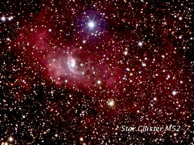
Koliko ima zemalja?
“Hvala Allahu, Gospodaru svjetova”
(Kur’an, 1:1)
Ako otvorite Kur’an i pogledate prvu suru, vidjet cete da ona pocinje: “Hvala
Allahu Gospodaru svjetova.”
Svjetova? Ne samo jednog? Da… svjetova! Postoji fizicki svijet, duhovni svijet,
svijet bakterija, itd. To je jedan nacin na koji možemo razumjeti izraz
svjetovi. Jedan drugi ajet u Kur’anu, ipak istice da postoje mnoge zemlje (vidi
Kur’an 65:12) Je li moguce da postoje i druge zemlje?
“I od znakova Njegovih je stvaranje nebesa i Zemlje i šta je
po njima rasijao od živih bica. I on je za skupljanje njihovo - kad bude htio -
kadar.”
(Kur’an, 42:29)
Niko ne ocekuje da ce se u okviru Suncevog sistema otkriti još jedna Zemlja.
Medutim naucnici kažu da je sasvim izvjesno da u našoj galaksiji postoje mnoge
zemlje izvan Suncevog sistema. Oni kažu da prosjecno pedeset milijardi zvijezda
u Mlijecnom putu sporo rotira kao Sunce. Ova karakteristika ukazuje da su te
Zvijezde okružene planetama koje su njihovi sateliti. Za Bernardovu zvijezdu se
npr. vjeruje da ima najmanje jednog planetarnog saputnika. Svi prikupljeni
podaci pokazuju cinjenicu da su planetarni sistemi u obilju razasuti po citavom
univerzumu. Suncev sistem i Zemlja nisu jedini.
Kur’an takode koristi simbolicnu oznaku broja sedam da bi ukazao na postojanje
mnoštva nebesa (vidi Kur’an, 2:29). Ovo je potvrdeno ispitivanjima koja su
nacinili eksperti za astrofiziku galaktickih sistema. Dakle, još jednom
nalazimo da Kur’an kaže nešto što ce naucnici kasnije utvrditi da je istina.
Možemo li, dakle, ne vjerovati u ovu Knjigu? Bog kaže:
“Uistinu, oni koji ne vjeruju u Opomenu pošto im je došla...
a uistinu, on je Knjiga silna.”
“Ne prilazi joj neistina ispred nje, niti iza nje; Objava je od Mudrog,
Hvaljenog.”
(Kur’an, 41:41-42)
(2:26) KOMARAC - SPECIJALNO STVORENJE
Kur’an cesto poziva ljude da istražuju prirodu i u njoj otkriju “znake
Allahove”. Sva živa i neživa bica u univerzumu puna su znakova koji otkrivaju
da su ona “stvorena”, i da su ona tamo da demonstriraju moc, znanje i vještinu
svog “Tvorca”. Covjek je odgovoran za identificiranje tih znakova koristeci
svoju mudrost i obožavajuci Allaha.
Iako sva živa bica nose te znakove, postoje neke životinje na koje se Kur’an
posebno osvrce. 26-i ajet sure Bekara komarca spominje na slijedeci nacin:
“Uistinu! Allah se ne stidi da navede primjer (kao) što je
komarac, te ono što je iznad njega. Pa što se tice onih koji vjeruju, ta znaju
da je to Istina od Gospodara njihovog; a što se tice onih koji ne vjeruju pa
govore: “Šta želi Allah ovim primjerom?” - zavodi njime mnoge i upucuje njime
mnoge. A ne zavodi njime, izuzev grješnike.”
(Kur’an, 2:26)
Iako smatran kao jedno obicno i beznacajno stvorenje, komarca vrijedi ispitati i
o njemu razmišljati obzirom da on nosi znake Allahove. Zbog toga se u ajetu
kaže: “Allah se ne stidi da za primjer navede komarca, te ono što je iznad
njega.”
Izvanredne osobine komarca.
Ono što je opcenito poznato o komarcima je da su oni krvopije i da se hrane
krvlju. Ipak ovo nije baš posve tacna informacija, jer krv ne sisaju svi
komarci, nego iskljucivo ženke. Sem toga ženke ne sisaju krv zbog njihove
potrebe za hranom. I mužjaci i ženke se hrane cvjetnim nektarom. Jedini razlog
zašto ženke, za razliku od mužjaka, sišu krv, je njihova potreba za proteinima
iz krvi koji pomažu razvoju njihovih jajašca.
Jaja komarca koja su se razvila nahranjena krvlju na vlažno lišce polaže ženka
komarca za vrijeme ljeta ili jeseni. Prije toga majka prethodno temeljito
ispita tlo , koristeci delikatne receptore ispod svog stomaka. Pošto nade
pogodno mjesto, ona pocinje polagati jaja. Jajašca, koja su kraca od jednog
milimetra bivaju poredana u red ili u grupe jedno po jedno. Neke vrste komaraca
polažu jaja spojena jedno za drugo tako da ona cine jednu paletu koja može
sadržavati oko 300 jajašca.
Respiratorni sistem larve baziran je na udisanju zraka pomocu cjevcice, koju
istakne iznad vodene površine. U meduvremenu larva visi obješena naopako pod
vodom. Narocit sekret sprjecava vodu da procuri u otvore kroz koje larva diše.
Brižljivo položena bijela jaja uskoro pocinju da tamne i potpuno pocrne u roku
od dva sahata. Ova tamna boja daje zaštitu larvi sprecavajuci da bude
primjecena od ptica i insekata. Potrebna je citava zima da bi se završio period
inkubacije. Obzirom da su jaja stvorena sa strukturom koja im omogucava da
prežive dugu i hladnu zimu, ona ostaju živa do proljeca kada se period
inkubacije završava.
Izlazak iz jajeta.
Kada se završi inkubacioni period, larve pocinju da izlaze iz svojih jaja skoro
uzastopno. Prvo jaje odmah slijede druga. Nakon toga sve larve pocinju da
plutaju na vodi. Larve, koje se neprestano hrane, ubrzano rastu. Uskoro njihova
koža postane pretijesna, što im onemogucava dalji rast. Ovo pokazuje da je
vrijeme za prvu promjenu kože. Tvrda i krhka koža pocinje da puca. Do završetka
razvoja larva komarca mora promijeniti kožu još dva puta. Metoda koju koristi
larva za uzimanje hrane je, zaista, impresivna. Larve prave male vrtloge u vodi
sa svoja dva ekstremiteta u vidu lopatica i tako usmjeravaju bakterije i druge
mikroorganizme da plove prema njihovim ustima.
Ukratko, životinja zaživi u kooperaciji sa jednom delikatnom ravnotežom. Da ona
nema cjevcicu za zrak, ne bi preživjela, i da nema narociti sekret, njena
respiratorna cjevcica bila bi blokirana.
U meduvremenu vecina larvi još jednom mijenja kožu. Posljednja promjena kože je
razlicita od drugih promjena. Sa ovom zadnjom promjenom larva prelazi u završnu
fazu svog zrenja. Sada je vrijeme za larvu, koja je dovoljno odrasla u ovoj
fazi da se oslobodi svoje školjke. Iz školjke izlazi tako razlicito stvorenje,
da je doista teško vjerovati da se radi o dvije razvojne faze istog bica. A ove
metamorfoze su previše komplikovane i delikatne da bi ih programirala sama
larva, ili njena majka, ili bilo koja živa stvar.
Za vrijeme ove posljednje faze metamorfoze životinjica se susrece sa opasnošcu
da se uguši jer joj se mogu zatvoriti respiratorni otvori koji vire iznad vode.
Ipak, pocevši od ove faze disanje se ne obavlja kroz ove rupice, nego kroz
dvije cjevcice koje se pojave na tijelu životinjice. Ovo je razlog što se ove
dvije cjevcice izdignu iznad vode prije promjene kože. Za vrijeme od tri do
cetiri dana u ovoj razvojnoj fazi nema uzimanja hrane.
Sada je komarac dovoljno zreo i dobio je konacan oblik. Komarac je sada spreman
da leti sa svim svojim organima , kao što su antene, trup, noge, prsa, krila,
trbuh i velike oci.
Kako komarci opažaju vanjski svijet?
Komarci su opremljeni sa krajnje osjetljivim toplotnim receptorima. Oni
zapažaju stvari okolo sebe u razlicitim bojama, zavisno od njihove temperature.
Pošto ova percepcija ne zavisi od svjetlosti, za komarca je sasvim lahko da
zapazi krvni sud u mracnoj sobi. Toplotni receptori komarca su tako osjetljivi
da osjete temperaturnu razliku od jednog hiljaditog dijela stepena Celzijusa.
Komarac ima skoro stotinu ociju. Ove oci su kao složene oci smještene na vrh
njegove glave.
Zadivljujuca tehnika sisanja krvi.
Pošto komarac sleti na svoj cilj, on prvo detektira mjesto, koristeci dvije
naprave oko svojih usta. Žaoka nalik na špric zašticena je specijalnom navlakom
koja se svlaci za vrijeme sisanja krvi. Komarac ne ubada kožu na nacin da
pritiskom utisne žaoku. Ovdje taj posao obavlja gornja celjust, oštra kao nož
sa zubima koji su povijeni unazad. Celjust se krece naprijed-nazad, kao
testera, dok ne rasijece kožu. Kada žaoka, umetnuta kroz ovaj razrez na koži,
dosegne krvni sud, bušenje prestaje. Sada je vrijeme da životinjica sisa krv.
Ipak, kao što je poznato, na najmanji udar na krvni sud ljudsko tijelo reaguje
lucenjem enzima, koji zgrušava krv i sprecava njeno oticanje. Ovo bi trebao
biti veliki problem za komarca jer tijelo, takode reaguje na sicušnu rupicu,
koju je napravio komarac, pa bi se krv zgrušala i poceo popravak krvnog suda.
Ovo znaci da životinjica ne bi bila u stanju da posisa krv.
Ali, komarac ovaj problem eliminiše na specijalan nacin. Prije nego što komarac
pocne sisati krv, on u otvor, koji je nacinio na tijelu covjeka, izlucuje
sekret kojeg postavlja na otvoru krvnog suda.
Ova tecnost neutrališe enzim, koji bi trebao zgrušati krv. Svrab i nateknutost
mjesta koje je ujeo komarac uzrokovan je baš ovom tecnošcu koja sprecava
zgrušavanje.
Ovo je jedan izvanredan proces koji nam namece slijedeca pitanja:
1. Kako komarac zna da u ljudskom tijelu ima enzim za zgrušavanje krvi?
2. Da bi proizveo sekret za neutralizaciju u svom tijelu protiv tog enzima, on
treba da zna hemiju enzima. Kako je to moguce?
3. Cak i kada bi nekako došao do tog saznanja, kako bi proizveo taj sekret u
svom tijelu i svu tehniku, koja je potrebna za njegov transfer do žaoke.
Odgovor je jasan: Nije moguce da komarac izvede bilo šta od ovoga. On nema ni
potrebnu mudrost, niti znanje hemije, niti laboratorijsku opremu da proizvede
taj sekret. Ono o cemu mi ovdje govorimo jeste komarac od nekoliko milimetara
bez ikakve svijesti i mudrosti, i to je sve…
Sasvim je jasno da je Allah taj “Gospodar nebesa i Zemlje i onog izmedu njih”
koji je stvorio oboje, i covjeka i komarca i komarca obdario zadivljujucim
osobinama.
Komarac pocinje svoj let sa specijalnim senzorskim sistemom na raspolaganju da
bi otkrio mjesto žrtve. Sa ovim sistemima on nalikuje na borbeni avion,
opremljen sa detektorima toplote, gasa i vlage.
(2:135) NAZARENCI - RANI SLJEDBENICI ISUSA
’I govore: “Budite jevreji ili Nazarenci, bicete upuceni.”
Reci: “Naprotiv, millet Ibrahima hanife”, a nije bio od mušrika.’
(Kur’an, 2:135)
Kur’an rane sljebenike Isusa naziva Nazarencima.
Ovo je historijski tacno. Rijec “kršcani” bio je samo nadimak, koji su
koristili Rimljani nakon Isusove smrti (Djela Apostolska, 11:26): “Apostoli su
prvo nazvani kršcanima u Antiohiji.”
(2:187) ASTRONOMSKI SUMRAK GRANICA IZMEÐU SVJETLA I TAME
“Dopušta vam se (u) noci posta refes sa ženama vašim. One su odjeca vaša,
a vi ste odjeca njihova. Zna Allah da ste vi obmanjivali duše svoje pa je
primio pokajanje vaše i oprostio vam. Zato im sada pristupajte i tražite šta je
propisao Allah za vas. I jedite i pijte dok vi ne budete razlikovali nit bijelu
od crne niti zore - zatim ispunite post do noci. A ne pristupajte im i (kad) vi
budete mu’tekifi u mesdžidima; to su granice Allahove, zato im se ne
približujte. Tako objašnjava Allah znakove Svoje ljudima, da bi se oni
pobojali.”
(Kur’an, 2:187)
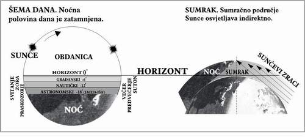
Granica svjetla i tame. Dan se astronomski dijeli na noc i obdanicu. Noc
je vremenski interval koji protekne izmedu dva uzastopna dodira gornje tacke
Suncevog diska sa horizontom. Prvi nastaje pri zalasku, a drugi pri izlasku
Sunca. Dijelovi noci poslije zalaska Sunca, koje odlikuje relativna vidljivost,
su vecernji sumrak ili suton, i jutarnji sumrak ili svitanje.
U zavisnosti od intenziteta prispjele svjetlosti u vedrim nocima bez mjesecine,
razlikujemo slijedece sumrake: gradanski vecernji i jutarnji, te astronomski
sumrak. Astronomski sumrak je najduži.
Na kraju vecernjeg astronomskog sumraka pojavljuju se zvijezde koje se mogu
vidjeti golim okom, dok na pocetku jutarnjeg one pocinju da trnu. Ovaj tren
prakticno oznacava trenutak diobe noci i dana.
Prema tome razlikujemo: vecernji astronomski sumrak koji pocinje sa zalaskom
cijelog Suncevog diska, a završava se kad se njegov centar nade 18° ispod
horizonta, i jutarnji astronomski sumrak koji pocinje kad centar diska dostigne
visinu -18°, a završava prvim dodirom Sunca sa obzorom. Osvijetljenost pri
kraju vecernjeg sumraka i pocetkom jutarnjeg iznosi svega 0,0006 luksa. Dio
astronomskog sumraka iz kojeg je iskljucen interval vecernjeg gradanskog
sumraka, naziva se vecer. Slicno ovome, praskozorjem nazivamo vremenski
interval koji je potreban Suncu da se približi horizontu sa -18° na -6°
stepeni. Sumraci su najkraci na ekvatoru, a duži su na vecim geografskim
širinama.
Na osnovu iznesenog lahko je povezati dati ajet sa pojmom astronomskog sumraka,
jer upravo onih 18° odreduje granicu mraka i dana, odnosno raspoznavanja niti.
(4:56) NERVNI ZAVRŠECI I OSJECAJ BOLA
Kur’an i senzorske karakteristike kože:
“Uistinu! One koji ne vjeruju u ajete Naše: pržicemo ih
vatrom. Kad god se ispeku kože njihove zamijenit cemo ih kožama drugim, da
iskuse kaznu. Uistinu! Allah je Mocni, Mudri.”
(Kur’an, 4:56)
Ne tako davno se vjerovalo da je cijelo tijelo osjetljivo na bol i nije bilo
poznato da u tijelu postoje posebni živci koji su receptori bola.
Moderna nauka je utvrdila da postoji oko 15 centara za razlicite tipove nervnih
senzacija. Medicinski strucnjaci su podijelili osjecaj bola u tri grupe:
površinski, duboki i složeni. Površinski je specifican za dodir, bol i toplotu.
Što se tice dubokog osjecaja, on je karakteristican za mišice i zglobove.
Anatomija je pokazala da su nervni završeci za bol i toplotu vrlo bliski, i da
su nervni završeci za bol obilato prisutni u koži. Tako je koža najvažniji dio
covjecijeg tijela vezan za osjecaj bola, zbog postojanja brojnih nervnih
završetaka.
Danas je specijalistima vrlo dobro poznato da duboke opekotine uništavaju
nervne završetke, tako da osoba koja gori poslije toga ne osjeca nikakav bol.
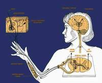
Kako je takva informacija mogla biti poznata u vrijeme Muhammeda a.s. kada se u
to vrijeme Kur’anu pripisivalo ljudsko porijeklo? Kur’an izricito navodi da ce
covjeku biti davana “nova koža” da bi iskusio bol, povezujuci na taj nacin
gubitak kože sa gubitkom nervnih završetaka koji prenose intenzitet bola. O
svemu ovome Kur’an nas informiše prije 1400 godina kada ljudi nisu znali ništa
o dubokim i djelimicnim opeklinama i njihovom anastezijskom efektu.
Koža je centar osjetljivosti na opekotine. Tako, ako kožu vatra potpuno sagori,
onda više nema osjetljivosti. Ovo je razlog što ce Allah nevjernike na Sudnjem
danu kažnjavati tako što ce im s vremena na vrijeme mijenjati kože, kao što On,
Uzvišeni i Slavljeni kaže u Kur’anu:
“On je samo Opomena svjetovima.
A sigurno cete saznati vijest njegovu nakon (izvjesnog) vremena.”
(Kur’an, 38:87-88)
(6:125) EFEKAT VISINE
Jedno specificno znanje, koje je izloženo u Kur’anu stoljecima prije njegovog
naucnog otkrica, vezano je za sastav atmosfere. Sada je poznato da, što se više
penjemo prema nebu, nailazimo na sve manje zraka, a tako i kisika bez kojeg
nema disanja. Oni koji lete na velikim visinama, avionima ili balonima,
osjecaju oštru kontrakciju pluca, što uzrokuje bol.
U vrijeme objave Kur’ana u sedmom stoljecu niko nije mogao znati da bi uspon ka
nebu mogao uzrokovati pritisak i bol u grudima, iz prostog razloga što je to
bilo u razdoblju prije bilo kakvih letova.
“Pa onome koga Allah želi da uputi, raširi grudi njegove
Islamu. A onom koga želi da zavede, ucini grudi njegove tijesnim, uskim, kao da
se penje u nebo. Tako postavlja Allah prljavštinu na one koji ne vjeruju.”
(Kur’an, 6:125)
1. Naucne cinjenice o stanju covjeka na velikim visinama.
Atmosferski slojevi i njihovi fiziološki efekti na covjeka.
a) Fiziološki dovoljno podrucje za covjeka je od morskog nivoa pa do 10.000
stopa iznad površine mora. Kisik u ovom atmosferskom sloju je dovoljan za
preživljavanje covjeka.
b) Fiziološki nedovoljno podrucje je izmedu 10.000 do 50.000 stopa. U ovoj zoni
postoji manjak kisika, pored smanjenog atmosferskog pritiska. Ovo može
rezultirati u cisto fiziološkim simptomima na ljudsko tijelo, pa se dogadaju
simptomi hypoxie (nedostatka kisika) i desparizma (niskog atmosferskog
pritiska).
c) Bliski kosmos, od 50.000 stopa. Sa fiziološke tacke gledišta covjek ne može
živjeti na visinama vecim od 50.000 stopa cak i kad bi udisao 100% kisik. On bi
morao nositi kosmicko odijelo zbog smanjenja atmosferskog pritiska i
dificijencije kisika.
2. Simptomi faze hypoxie.
a) Od nivoa mora pa do visine 10.000 stopa simptomi hypoxie ne postoje.
b) Od 10.000 do 16.000 fiziološki sistem covjeka sprecava pojavu simptoma
hypoxie, osim ako je period izlaganja dug. Disanje postaje brže i dublje, puls
i krvni pritisak takoder rastu.
c) Na visini od 16.000 do 25.000 stopa fiziološki sistem ne funkcioniše i ne
može snabdjeti tkivo sa dovoljnom kolicinom kisika, te se ranije pominuti
simptomi pojavljuju. U uvom stanju nalazimo jasno objašnjenje stiskanja prsa
koja se osjecaju na ovim visinama. (Kur’an, 6:125).
d) Kriticno podrucje je izmedu 16.000 i 25.000 stopa pa na više. U ovom
podrucju covjek potpuno gubi svijest zbog sloma nervnog sistema. Promjene koje
se dogadaju u prsima dostižu maksimum na ovoj visini i tu se dešava kompletan
fiziološki krah funkcija srca i respiracije.
3. Pad atmosferskog pritiska.
Kada se covjek izloži niskom atmosferskom pritisku na velikim visinama (a to se
dešava putnicima aviona kada sistem za održavanje pritiska zakaže), pojavljuje
se nekoliko simptoma kao rezultat ekspanzije gasova i njihovo povecanje u
ljudskom tijelu. Gasovi zarobljeni u šupljinama ljudskog tijela, kao što je
stomak, kada se šire, pritiskaju pluca što uzrokuje teškocu pri disanju,
nelagodu i tjeskobu u prsima. Ista stvar bi se dogodila u debelom crijevu,
plucima, zubima, srednjem uhu, sinusima - a sve ovo uzrokuje oštar bol u
tijelu. Pored toga, svi gasovi rasplinuti u tjelesnim celijama, npr. dušik,
doveli bi do zagušenja, uzrokujuci oštar bol u grudima.
(6:133) RAZVOJ I NESTANAK VRSTA
Ne postoje apsolutno nikakvi argumenti koji bi sugestirali da je jedna vrsta
humanoida evolvirala u drugu. Takode nema naucnog dokaza koji bi branio teoriju
da je covjek (homosapiens) nastao iz linije velikih majmuna.
“A Gospodar tvoj je Neovisni, Vlasnik milosti. Ako hoce
uklonit ce vas i nadomjestiti nakon vas cime hoce, kao što je stvorio vas od
potomstva drugih naroda.”
(Kur’an, 6:133)
“Mi smo ih stvorili i ojacali vezišta njihova, a kad
htjednemo, zamijenicemo slicnim njima (kompletnom) promjenom.”
(Kur’an, 76:28)
(7:40) SINGULARITET CRNIH RUPA
Ušice igle.
Nakon otkrica crnih rupa naucnici su smatrali da mora postojati neko centralno
mjesto gdje je gravitacija maksimalna. Zatim su konstatovali da crne rupe
eventualno kolapsiraju na zapreminu velicine nula, beskonacne gustoce,
kreirajuci ono što je poznato kao “singularitet”. Kako se gustoca povecava,
putanja svjetlosnih zraka emitovanih sa zvijezde se iskrivljuje i eventualno
nepovratno omotava oko nje. Prostor se probada u “singularitetu” u kojem nema
vremena!
Prema nekim ucenjacima kontakt sa drugim univerzumima pocinje ovdje! Oni misle
da moraju postojati drugi univerzumi, ali su fizicki zakoni u njima drugaciji
od naših. Nema privlacenja, nema brzine svjetlosti i nema vremena u drugim
univerzumima.
Naucnici kažu da je velicina singulariteta kao iglene uši. U Kur’anu postoji
ajet koji se dotice ovog predmeta i on glasi:
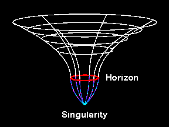
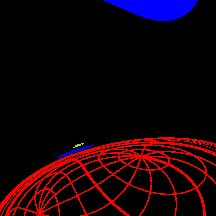
“Uistinu, oni koji budu poricali ajete Naše i oholili se
prema njima, nece im se otvoriti kapije neba i nece uci u Džennet, dok ne prode
deva kroz ušice igle; a tako placamo prestupnike.”
(Kur’an, 7:40)
Horizont dogadaja je podrucje gdje sila gravitacije postaje tako snažna da cak i
svjetlost biva uvucena u crnu rupu. Mada je horizont dogadaja dio crne rupe, on
nije opipljiv objekt. Ako biste padali u crnu rupu, bilo bi nemoguce da
spoznate trenutak kad dodirujete horizont dogadaja.
Singularitet nije uopce shvatljiv objekat. Prema opcoj teoriji relativiteta
singularitet je tacka beskrajne zakrivljenosti prostora i vremena. Ovo znaci da
je sila gravitacije postala beskonacno jaka u centru crne rupe. Sve što pada u
crnu rupu prolazeci kroz horizont dogadaja, ukljucujuci i svjetlost, stici ce u
singularitet crne rupe. Prije nego što nešto stigne u singularitet, ono biva
rastrgano od intenzivnih gravitacionih sila. Cak i sami atomi bivaju rastrgani
od gravitacionih sila.
(7:54) PROMJENA DANA I NOCI
U vrijeme kada se držalo da je Zemlja centar svijeta i da se Sunce krece u
skladu s tim, kako je neko mogao iznositi onda pogrešne postavke, koje nisu u
skladu s tim? Ovo se, naravno, ne odnosi na Kur’an koji o fenomenu smjene noci
i dana govori u slijedecim ajetima:
“Uistinu! Gospodar vaš je Allah koji je stvorio nebesa i
Zemlju u šest dana, zatim se postavio na Arš. Prekriva nocu dan (koji) traži
nju žurno, a Sunce i Mjesec i zvijezde potcinjeni su komandi Njegovoj. Uistinu!
Njegovo je stvaranje i komanda! Blagoslovljen neka je Allah, Gospodar
svjetova!”
(Kur’an, 7:54)
“A znak za njih je noc: povlacimo od nje dan, tad gle! oni
zamraceni.”
(Kur’an, 36:37)
“Zar ne vidiš da Allah daje da noc ude u dan i daje da dan
ude u noc, a potcinio je Sunce i Mjesec, svakoje plovi roku odredenom - i da je
Allah o onom šta radite Obaviješteni?”
(Kur’an, 31:29)
“Stvorio je nebesa i Zemlju s Istinom. Zavija nocu dan, i
zavija danom noc. I potcinio je Sunce i Mjesec. Svakoje plovi roku odredenom.
Besumnje! On je Mocni, Oprosnik!”
(Kur’an, 39:5)
Prvi citirani ajet ne zahtijeva nikakav komentar. Drugi daje jednu sliku. Treci
i cetvrti ajet nude interesantan materijal, vezano za medusobno prodiranje, a
posebno ovijanje noci na dan i dana na noc. Zaviti ili oviti je pravo znacenje
arapske rijeci kevvere. Originalno znacenje glagola je zaviti turban oko glave,
a i svaki drugi smisao ove rijeci vezan je za ovijanje.
“On je samo Opomena svjetovima.
A sigurno cete saznati vijest njegovu nakon (izvjesnog) vremena.”
(Kur’an, 38:87-88)
(7:54) ŠEST DANA ILI ŠEST PERIODA STVARANJA
Danas znamo da se proces stvaranja mjeri u milijardama godina. Urednici Biblije
ovo nisu mogli znati. U njihovoj žudnji da sabat nametnu i drugima oni su
napisali da se Bog odmorio na dan prvog sabata nakon što je završio svoj rad na
stvaranju nebesa i Zemlje.
Šest dana stvaranja u knjizi “Postanak” je kao šest dana bilo kojeg dana u
hefti. Za svecenicke urednike Biblije pod danom se podrazumijevao period od
jednog zalaska Sunca do drugog. Šest dana je oznacavalo od nedjelje do petka.
Oni su vjerovali da je razlog što je sabat postao sveti dan, što je Bog na taj
dan “otpocinuo.” Tako nam ti editori kažu:
“Na sedmi dan Bog je završio posao, kojim se bavio, tako da se On na sedmi dan
odmorio od svoga posla. I Bog blagoslovi sedmi dan i ucini ga svetim, jer se On
od sveg svoga posla stvaranja odmorio na taj dan.”
(Postanak, 2:2)
Kao da ovo nije bilo dovoljno, editori su došli na ideju da se Bog i dalje
odmarao, kada su oni napisali: “Za šest dana Gospod stvori nebesa i Zemlju, a
sedmog dana je On otpocinuo i osvježio se.”
(Biblija, verzija kralja Džejmsa, Izlazak 31:17)
Ideja da se Bog odmara kao ljudi i osvježava kao ljudi morala je biti
korigovana od strane Isusa, kada on, prema Ivanu, izjavljuje da Bog neprestano
radi, cak i na dan sabata. (Vidi: Ivan, 5:16).
Bog je razjasnio stvari sopstvenim rijecima kada je u Kur’anu objavio:
“I zaista smo stvorili nebesa i Zemlju i šta je medu njima u
šest dana, i nije Nas dotakao nikakav umor.”
(Kur’an, 50:38)
Gornji kur’anski ajet jasno odbacuje tvrdnju da se Bog odmarao. Bog se, prema
Kur’anu, ne umara
“Ne obuzima Ga drijemež, niti san.”
(Kur’an, 2:255)
A šta je sa periodom stvaranja? Zar i u Kur’anu nije takoder šest dana? U
gornjim citatima izraz preveden kao dani može oznacavati, ne samo dane, nego
duge periode vremana i nedefinisane periode vremena (koji su uvijek dugi).
Kur’an takode govori o:
“Upravlja stvar od neba ka Zemlji, zatim se uspinje Njemu u
danu cija je mjera hiljadu godina od onog šta racunate.”
(Kur’an, 32:5)
“Penju se meleci i Duh Njemu, u danu cija je mjera pedeset
hiljada godina.”
(Kur’an, 70:4)
Dugo vremena prije modernih ideja o dužini vremena stvaranja, komentatori
Kur’ana su shvatali, kad Kur’an govori o šest dana stvaranja, da to ne znaci
šest naših dana, nego da je to šest perioda.
Ponovo, dakle, vidimo da je Kur’an izbjegao ponoviti grešku, koja je data u
prethodnoj knjizi, grešku koja nije otkrivena do našeg vremena. Imajuci ovo u
vidu, zar neko može insistirati na tome da je Kur’an djelo covjeka?
(10:5) PRIRODNO I REFLEKTOVANO SVJETLO
“Blagoslovljen neka je Onaj koji je nacinio u nebu galaksije,
i nacinio u njemu svjetiljku i Mjesec osvjetljavajucim!”
(Kur’an, 25:61)
“On je Taj koji je ucinio Sunce blještecim, a Mjesec sjajnim,
i odredio mu faze, da znate broj godina i racunanje. Allah je to stvorio samo s
Istinom. Razlaže znakove ljudima koji znaju.”
(Kur’an, 10:5)
Govori se o ustrojstvu svemira i medusobnoj vezi Sunca i Mjeseca.
Milostivi ljudima stavlja do znanja da Mjesec služi samo kao reflektor Sunceve
svjetlosti koja pada na Zemlju i da je ustvari hladan, dok je Sunce izvor
svjetlosti ili “plamteca svjetiljka” koja je užarena i koja je odašiljac te
svjetlosti.
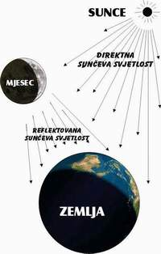
(10:5) NAJVECA BRZINA - BRZINA SVJETLOSTI
Najveca brzina C koja oznacava brzinu svjetlosti u vakuumu nagoviještena je u
dva ajeta Kur’ana velicanstvenog, povezujuci ovu fundamentalnu univerzalnu
konstantu sa kretanjem sistema Zemlja-Mjesec. Novo relativisticko tumacenje ove
kur’anske relacije daje vrijednost C=299792,5 km/s, što je u krajnje
zacudujucoj saglasnosti sa prihvacenom internacionalnom vrijednosti. Ovaj
zapanjujuci rezultat istice jedinstvo fizickog svijeta, vrijednost specijalne
teorije relativiteta i autenticnost samog Kur’ana.
Brzina svjetlosti u vakuumu pripada maloj grupi fundamentalnih konstanti, pa
ipak ona zauzima istaknutu poziciju u ovoj grupi. Prije svega ona se susrece u
veoma razlicitim granama fizike. Od starih Grka pa do Srednjeg vijeka smatralo
se da je brzina svjetlosti beskonacna. Aristotel je smatrao da se svjetlost
širi trenutno. U 11-om stoljecu arapski ucenjak El-Hassan je smatrao da
svjetlost putuje nekom odredenom brzinom. Galileo je ispitivao ovu brzinu, ali
nije uspio , objasnivši da se svjetlost krece izvanredno brzo. Roemir (1676) je
prvi mjerio brzinu svjetlosti, koristeci pomracenje Jupiterovog satelita Jo. On
je dobio jedan netacan rezultat od 215000 km/s jer u to vrijeme nije bio tacno
poznat dijametar Zemljine orbite. Pocevši od 17-og vijeka pokazuje se stalni
napredak u metodama i tehnikama odredivanja najvece brzine C.
Fromova vrijednost se smatrala najtacnijom dug period sve do 1983. godine, kada
je u ovu svrhu primjenjen interferometar sa moduliranom laserskom radijacijom.
Prema Americkom nacionalnom modelu standarda C=299792,4574 + 0,0011 km/s, a
prema Britanskoj nacionalnoj laboratoriji C=299792,4590+0,0008 km/s.
Lunarno orbitalno kretanje u Kur’anu.
Prije cetrnaest vjekova, Kur’an, sveta knjiga Islama, objavljena je od Boga
covjecanstvu putem poslanika Muhammeda, koji je živio na Arabijskom poluostrvu.
Arapi su koristili lunarni kalendar u svom racunanju vremena. Kur’an im se
obraca na jedinom jeziku kojeg su oni mogli razumjeti, ne dirajuci u njihove
navike. Bog kaže u Kur’anu:
“On je Taj koji je ucinio Sunce blještecim, a Mjesec sjajnim,
i odredio mu faze, da znate broj godina i racunanje. Allah je to stvorio samo s
Istinom. Razlaže znakove ljudima koji znaju.”
(Kur’an , 10:5)
Period Sidercki Sinodicki
Lunarni mjesec T 27.321661 dana = 655.71986 sati 29.53059 dana
Zemaljski dan t 23 h, 56 min 4.0906 s = 86164.0906 s 24 sati = 86400 s
Lunarna godina sastoji se od dvanaest mjeseci, pri cemu je mjesec definisan kao
vrijeme jedne revolucije Mjeseca u njegovoj orbiti oko Zemlje. Nagovještaj
takve orbite imamo u Kur’anu:
“I On je Taj koji je stvorio noc i dan i Sunce i Mjesec:
Svakoje u orbiti plovi.”
(Kur’an, 21:33)
Ovdje je iznesena jedna naucna cinjenica, a to je postojanje orbita za Zemlju,
Sunce i Mjesec! Dakle, u Kur’anu je uspostavljen novi koncept 100 godina prije
no što je to utvrdila savremena nauka.
Nova relacija u sistemu Zemlja - Mjesec.
Dužina Mjeseceve orbite L i vremena t jednog zemaljskog dana u korelaciji su sa
kur’anskim ajetom koji opisuje univerzalnu konstantu brzine nekog kosmickog
dogadaja kako slijedi:
“Upravlja stvar od neba ka Zemlji, zatim se uspinje Njemu u
danu cija je mjera hiljadu godina od onog šta racunate.”
(Kur’an, 32:5)
Kur’anski izraz “kako vi to racunate” ne ostavlja nikakvu sumnju da je u pitanju
lunarna godina. Ajet pocinje sa osvrtom na izvjestan kosmicki dogadaj koji Bog
kreira i njime upravlja. Ovo dogadanje putuje kroz citav univerzum izmedu
nebesa i Zemlje tako brzo, da u jednom danu prede rastojanje u prostoru
ekvivalentno onome koje Mjesec prede za 1000 lunarnih godina. Pitanje koje se
namece je: Kakav je to kosmicki dogadaj i koja je najveca brzina kojom se on
krece na osnovu kur’anskih jednacina?
Gornji kur’anski ajet se razumije u svjetlu slijedecih jednacina: rastojanje
koje prelazi jedno kosmicko dogadanje u vakumu u jednom siderickom danu jednako
je dužini 12000 okretaja Mjeseca oko Zemlje.
C x t=12000 x L
Gdje je C brzina kosmickog dogadaja, t je vremenski interval jednog
terestrijskog sidrealnog dana definisanog kao vrijeme jedne rotacije Zemlje oko
njene ose (relativno na zvijezde) tj. 23 h, 56 min, 4,0906 s =86164,0906 s.
L je inercijalno rastojanje koje Mjesec prede u korevoluciji oko Zemlje za
vrijeme jednog siderijskog mjeseca, tj. L je neto dužina Mjeseceve orbite
njegovog geocenricnog kretanja, bez interferencije njegovog spiralnog kretanja
uzrokovanog revolucijom Zemlje oko Sunca - to je dužina lunarne orbite iz koje
je iskljucen efekt Suncevog gravitacionog polja na mjerenu vrijednost.
Neka je V izmjerena prosjecna orbitalna brzina Mjeseca izvedena iz prosjecnog
radijusa R lunarne geocentricne orbite mjerene sa orbitirajuce Zemlje za
vrijeme njenog heliocentricnog kretanja.
Ova vrijednost je data u svim knjigama astronomije.
Neka je a ugao koji prede sistem Zemlja Mjesec oko Sunca za period od jednog
sidrickog mjeseca 27,321661 dana. Možemo izracunati a ako uzmemo u razmatranje
period (365,25636 dana) jedne heliocentricne revolucije (jedne godine) sistema
Zemlja - Mjesec. Proracun daje slijedecu vrijednost za brzinu C:
C=12000 x 3682,67 x 0,89157 x 655,71986/86164,0906
C=299792,5 km/s
Ako se osvrnemo na internacionalnu vrijednost C=299792,458 km/s primjeticemo
izvanrednu saglasnost. Tako zakljucujemo da je kosmicki dogadaj spomenut u
prethodnom kur’anskom ajetu identican svjetlosti i da svi slicni kosmicki
dogadaji u vakuumu putuju ovom maksimalnom brzinom kao što su: sve vrste
elektromagnetnih talasa koji se šire izmedu nebesa i Zemlje, ocekivani
gravitacioni talasi preko citavog univerzuma, i sve cestice koje putuju ovom
najvecom kosmickom brzinom kao što su neutrini.
Ovdje je interesantno navesti i kur’anski ajet koji nagovještava istu
relativisticku jednakost u sistemu Zemlja - Mjesec gdje Allah kaže:
“I požuruju te s kaznom. A nece Allah prekršiti obecanje
Svoje. I uistinu, dan je kod Gospodara tvog kao hiljadu godina od onog što
racunate.”
(Kur’an, 22:47)
Tako obe relativisticke kur’anske jednakosti isticu da je dobijena vrijednost C
i pokazuju da je C trajna apsolutna konstanta. Ne postoji nikakav naucni dokaz
da se vrijednost C može mijenjati u vremenu.
Zakljucak
Interesantno je naci novu astronomsku relaciju izmedu radijusa lunarne orbite L
i vremena t jednog terestrijskog dana na osnovu novog relativistickog tumacenja
kur’anskih ajeta, koji nagovještavaju najvecu univerzalnu brzinu idenicnu
brzinu C svjetlosti u vakuumu.
Ovdje se takode izražava jedinstvo u kompleksu fenomena koji na prvi pogled
nemaju ništa zajednicko.
(10:24) VREMENSKE ZONE - ROTACIJA ZEMLJE
“Doista, primjer života Dunjaa je kao voda koju spuštamo s
neba pa se izmiješa njome rastinje Zemlje, od cega jedu ljudi i životinje. Dok,
kad uzme Zemlja ukras svoj i uljepša se, i pomisle stanovnici njeni da su oni
svemocni nad njom, dode joj naredba Naša nocu ili danju, pa je ucinimo
pokošenom, kao da nije bujala jucer. Tako razlažemo znakove za ljude koji
razmišljaju.”
(Kur’an, 10:24)
Razlog zašto Svemoguci Allah kaže “nocu ili danju” jeste, ako bi se taj cas
dogodio za vrijeme dana u Americi, onda bi to bila noc u Australiji, i obratno.
Sudnji dan se dogada za svu Zemlju bez obzira je li to noc ili dan. Ovdje je
sadržana jedna naucna cinjenica, a to je da Zemlja rotira oko sebe, pri cemu
imamo dan i noc.
Gledajuci 14 stoljeca unazad ljudi vjerovatno nisu mnogo znali o vremenskim
zonama pri cemu je kur’anski navod o ovom predmetu veliko iznenadenje. Koncept
da dok jedna porodica doruckuje za vrijeme izlaska Sunca, a druga uživa u
svježem nocnom zraku, je zaista nešto cemu se treba diviti, cak i u modernom
vremenu.
Naravno, prije 14 stoljeca covjek nije mogao putovati više od 30 milja na dan,
tako da su mu doslovno trebali mjeseci da na npr. doputuje iz Indije u Maroko.
Vjerovatno, kad bi vecerao u Maroku, on bi pomislio u sebi “Moji tamo u Indiji
takode veceraju.” Ovo je zbog toga što on nije shvatao da se u svom putovanju
kretao kroz vremenske zone. Vidimo, dakle, da Kur’an poznaje i istice takav
fenomen.
U ajetu 10:4 navodi se da kad historija dode svom kraju i dode Sudnji dan, on
ce se dogoditi u jednom trenutku, a taj trenutak zateci ce neke ljude nocu, a
neke danju.
Ovo jasno ilustrira Allahovu Božansku mudrost i njegovo prethodno znanje o
postojanju vremenskih zona, mada takvo otkrice nije bilo u skladu sa vremenom
od prije 14 stoljeca. Naravno, ovaj fenomen nije nešto što je ocima odmah
vidljivo, a ova cinjenica je dovoljan dokaz autenticnosti Kur’ana.
(10:34) REPRODUKCIJA GENETSKOG KODA
Postoji enigma gena, nepoznavanje od strane medicinske i biološke zajednice
diljem svijeta: porijeklo genetskog koda i mehanizam njegovog izražavanja. Niko
nije u stanju demonstrirati kako povecanje podataka sadržanih u genima vodi ka
sve kompleksnijim i kompleksnijim strukturama.
Onaj koji je stvorio genetski kod ima moc i da ga reprodukuje, da mu nešto doda
ili oduzme. Za onoga ko poznaje Kur’an, enigma uopce ne postoji.
“Reci: “Da li je neko od ortaka vaših taj koji pocinje
stvaranje, zatim ga ponavlja?” Reci: “Allah pocinje stvaranje, potom ga
ponavlja.” Pa kako se odvracate!”
(Kur’an, 10:34)
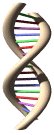
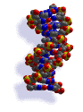
(10:61) SUBATOMSKE CESTICE
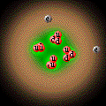
“I neceš biti u necem, niti ceš uciti iz njega - iz Kur’ana,
i necete raditi nikakav posao, a da necemo biti nad vama svjedoci kad se budete
u to udubili. I nece izmaci od Gospodara tvog ništa težine atoma u Zemlji, niti
u nebu; ni manje od toga niti vece, a da nije u Knjizi jasnoj.”
(Kur’an 10:61)
Mnogo stoljeca prije poslanstva Muhammeda a.s. postojala je dobro poznata
teorija atomizma koju je lansirao grcki filozof Demokrit. On i ljudi koji su
došli poslije njega smatrali su da se materija sastoji od sicušnih neuništivih
i nedjeljivih cestica, koji se zovu atomi. Arapi su se takode bavili istim
konceptom, ustvari, arapska rijec zerra odnosila se na najmanju cesticu poznatu
covjeku.
Sada je moderna nauka otkrila da se ova najmanja jedinica materije (tj. atomi
koji imaju iste karakteristike kao njegovi elementi) može razbiti na sastavne
komponente. Ovo je nova ideja, razvoj posljednjeg stoljeca, a ipak ova
informacija je vec bila dokumentirana u Kur’anu, koji kaže:
“A oni koji ne vjeruju govore: “Nece nam doci Cas.” Reci:
“Svakako, i tako mi Gospodara mog, sigurno vam dolazi.” - Znalca nevidljivog!
Ne izmice od Njega težina atoma u nebesima, niti u Zemlji, ni sitnije od toga,
niti krupnije, a da nije u Knjizi jasnoj.”
(Kur’an, 34:3)
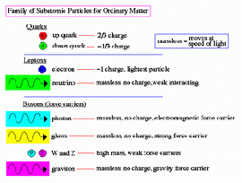
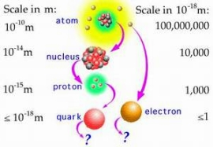
Nesumnjivo, prije 14 stoljeca ovakva izjava izgledala bi neuobicajena i za
jednog Arapa.
Atom nekog elementa je najprostija cestica koja odražava osobine elementa.
Atomska teorija ima cetiri pretpostavke: atomi sacinjavaju materiju. Neku vrstu
moderne teorije postavio je engleski ucitelj Džon Dalton 1808. godine. Ova
Daltonova teorija je opisala interakcije atoma, ali nije razmatrala mogucnost
postojanja subatomskih cestica. Prva subatomska cestica, negativno
naelektrisani elektron, otkrivena je 1899. godine. Moderni pogled na atom
pretpostavlja da on ima tri subatomske cestice.
Danas su naucnici unutar atoma identificirali mnoge druge cestice, ali se tri
proste subatomske cestice, elektron, proton i neutron, još uvijek koriste za
objašnjenje karakteristika atoma. Otkriveno je više od 200 subatomskih cestica,
od kojih mnoge nisu fundamentalne, nego su sastavljene od drugih prostijih
cestica. Npr. Rutherford je pokazao da se atom sastoji od jezgra i
orbitirajucih elektrona. Kasnije su fizicari pokazali da se nukleus sastoji od
neutrona i protona. Kasnije se ustanovilo da se protoni i neutroni sastoje od
kvarkova.
Neke od subatomskih cestica su: elektron, pozitron, elektron antineutrino,
negativni muon, muon, muon neutrino, muon antineutrino, negativni tau,
pozitivni tau, tau neutrino, tau antineutrino.
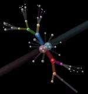
(10:61) SUDBINA - VJECNO ALLAHOVO ZNANJE
Relativnost vremena razjašnjava vrlo važnu stvar. Relativnost je tako
varijabilna da period vremena, koji se nama pokazuje kao milijarde godina, u
jednoj drugoj dimenziji može trajati samo sekundu. Štaviše, ogroman period
vremena, koji se proteže od pocetka svijeta pa do njegovog kraja, može trajati
cak, ne sekundu, nego trenutak, u drugoj dimenziji.
Ovo je sama bit koncepta sudbine - koncepta koji dobro ne razumije vecina
svijeta, posebno materijalisti, koji ga u kompletu odbacuju. Sudbina je
Allahovo savršeno znanje svih dogadaja prošlosti i buducnosti. Vecina svijeta
pita kako Allah može znati dogadaje, koji se još nisu zbili, a ovo ih sprecava
da razumiju autenticnost sudbine. “Dogadaji, koje još nismo iskusili”, nisu se
dogodili samo za nas. Allah nije ogranicen vremenom ili prostorom, jer On je
sam stvorio prostor i vrijeme. Iz ovog razloga prošlost, sadašnjost i buducnost
je sve jedno kod Allaha. Za Njega se vec sve dogodilo i završilo.
Linkoln Barnet drži da je univezum u svojoj cjelosti obuhvacen jednim kosmickim
intelektom. Volja koju Barnet naziva kosmicki intelekt je mudrost i znanje
Allahovo, kojim je zahvacen sav univerzum. Kao što znamo pocetak, sredinu i
kraj, i sve usputne epizode kao cjelinu, tako Allah zna vrijeme u kojem smo
podvrgnuti, kao jedan trenutak od pocetka do kraja. Ljudi to iskuse kad njihovo
vrijeme dode i oni su onda svjedoci sudbine koju im je Allah kreirao.
Takode je važno skrenuti pažnju na plitkost iskrivljenog razumijevanja sudbine,
koje preovladuje u društvu. Ovo iskrivljeno ubjedenje o sudbini sadrži
vjerovanje da je Allah odredio sudbinu za svakog covjeka, ali da tu sudbinu
covjek može ponekad da promijeni. Npr. za pacijenta koji se povrati sa ivice
smrti ljudi kažu “On je pobijedio sudbinu.” A niko ne može promijeniti svoju
sudbinu. Covjek koji se povrati sa vrata smrti nije umro jer mu nije bila
sudbina da umre. I opet sudbina je ljudi koji varaju sami sebe govoreci
“porazio sam sudbinu” da tako kažu i zadrže takav mentalni sklop.
Sudbina je vjecno Allahovo znanje, koji zna vrijeme (svaki trenutak) i koji
vlada nad citavim vremenom i prostorom, sve je odredeno i završeno u sudbini.
Mi razumijemo iz onoga što je dato u Kur’anu da je vrijeme za Allaha jedno:
neki dogadaji koji ce se nama dogoditi u buducnosti opisani su u Kur’anu kao da
su se dogodili davno prije. Npr. ajeti koji opisuju obracun ljudi pred Allahom
na drugom svijetu dati su kao dogadaji koji su se vec dogodili:
68.“I puhnuce se u sur, pa ce se onesvijestiti ko je u
nebesima i ko je na Zemlji, izuzev koga htjedne (zaštititi) Allah. Zatim ce se
u njega puhnuti drugi put, tad gle! - oni stoje, gledaju,
69. I zablistace Zemlja svjetlošcu Gospodara svog, i postavice se Knjiga, i
dovešce se vjerovjesnici i svjedoci, i presudice se medu njima s Istinom, i
nece im biti ucinjen zulm.
70. I bice placeno svakoj duši šta je radila, a On je Najbolji znalac onog šta
cine.
71. I bice sprovodeni oni koji ne vjeruju ka Džehennemu u skupinama, dok - kad
mu dodu, otvorit ce se kapije njegove, a reci ce im cuvari njegovi: “Zar vam
nisu dolazili poslanici izmedu vas - ucili vam ajete Gospodara vašeg i
opominjali vas na vaš susret ovog dana vašeg?” Reci ce: “Svakako, ali
obistinila se rijec kazne nad nevjernicima.”
72. Bice receno: “Udite na kapije Džehennema, vjecno cete biti u njemu.” Pa
lošeg li boravišta oholih.
73. I bice sprovodeni oni koji su se bojali Gospodara svog ka Džennetu u
skupinama, dok - kad mu dodu i otvorene budu kapije njegove i reknu im cuvari
njegovi: “Selamun alejkum! Bili ste dobri, zato udite u njega da vjecno
boravite!”
74. A (oni) ce reci: “Hvala Allahu koji nam je ispunio obecanje Svoje i dao nam
da naslijedimo Zemlju, nastanjujemo se u Džennetu gdje hocemo!” Pa divna je
nagrada radnika!”
(Kur’an, 39:68-74)
Kao što se da vidjeti, dogadanja koja ce se zbiti poslije naše smrti (s naše
tacke gledišta) u Kur’anu su opisani kao vec doživljeni i prošli dogadaji.
Allah nije vezan okvirom relativnog vremena, u koje smo mi zatvoreni. Allah je
htio ove stvari u bezvremenu: ljudi su ih vec izveli i svi ti dogadaji su vec
proživljeni i završili su se. U donjem ajetu nam se saopštava da svaki dogadaj,
bio on mali ili veliki je u znanju Allaha i zapisan je Knjizi:
“I neceš biti u necem, niti ceš uciti iz njega - iz Kur’ana,
i necete raditi nikakav posao, a da necemo biti nad vama svjedoci kad se budete
u to udubili. I nece izmaci od Gospodara tvog ništa težine atoma u Zemlji, niti
u nebu; ni manje od toga niti vece, a da nije u Knjizi jasnoj.”
(Kur’an, 10:61)
Ako covjek razmisli dublje u svjetlu gore iznesenog, sigurno ce u svojoj duši
shvatiti zapanjujucu i izvanrednu situaciju da svi dogadaji, koji prožimaju
Zemlju, su ustvari samo iluzija.
(10:61) ATOMSKA TEŽINA
Arapska rijec zerra najcešce oznacava najmanju cesticu poznatu covjeku. Moderna
nauka je medutim otkrila da se ova najsitnija cestica materije može razbiti na
sastavne komponente. Ovo je nova ideja nastala u XX vijeku, ali kako vidimo
informacija o postojanju još sitnijih cestica od atoma vec je bila data u
Kur’anu.
Atom je najmanja cestica materije, koja još uvijek zadržava karakteristike te
materije. U vecini slucajeva atom se sastoji od protona, neutona i elektrona.
Protoni i neutroni se nalaze u centru atoma zvanog atomsko jezgro, a elektroni
orbitiraju ili kruže oko centra nukleusa po stazama zvanim orbitali.
Atomska težina jednog atoma je mjera, koja oznacava koliku masu ima atom.
Atomska težina se racuna zbrajanjem broja protona i neutrona. Atomske mase nisu
date kao cijeli brojevi u tabeli periodnog sistema, jer se atomi mogu pojaviti
sa razlicim brojem neutrona. Atomska težina elementa je prosjecna težina svih
poznatih oblika tog elementa.
Atomska jedinica mase: 1 amj=1,6606x10-24gr, 1/12 mase atoma karbon-12.
Atomski broj je broj protona u nukleusu.
“I neceš biti u necem, niti ceš uciti iz njega - iz Kur’ana,
i necete raditi nikakav posao, a da necemo biti nad vama svjedoci kad se budete
u to udubili. I nece izmaci od Gospodara tvog ništa težine atoma u Zemlji, niti
u nebu; ni manje od toga niti vece, a da nije u Knjizi jasnoj.”
(Kur’an, 10:61)
(10:90,92) FARAON MERNEPTAH
I provedosmo sinove Israilove preko mora, pa ih je slijedio
faraon i vojske njegove nasiljem i plahovitošcu. Dok, kad ga stiže davljenje,
rece: “Vjerujem da nema boga osim Onog u kojeg vjeruju sinovi Israilovi i ja
sam od muslimana!”
91. Zar sad! A doista nisi poslušao prije i bio si od mufsida.
92. Zato cemo danas spasiti tebe - tijelo tvoje - da budeš znak za onog ko bude
iza tebe. A uistinu, mnogi od ljudi su prema znacima Našim nemarni.
(Kur’an, 10:90-92)
Jedno od najznacajnijih predskazanja datih u Kur’anu odnosi se na egipatskog
faraona zvanog Merneptah, koji je bio sin Ramzesa II. Prema historijskim
zapisima ovaj faraon je bio potopljen dok je progonio Musa a.s. preko Crvenog
mora. Pored Kur’ana ovaj faraon se spominje i u Bibliji u knjizi “Izlazak”: “I
vode se povratiše i prekriše dvokolice, i konjanike i svu vojsku faraonovu,
koja je za njima krenula kroz more, tako da niko od njih ne ostade”. (Izlazak,
14:28).
Zacudo, kada je sav svijet znao kako se faraon utopio, Kur’an donosi ovu
zapanjujucu objavu.
Kako je izvanredno morao izgledati ovaj ajet, kada je objavljen! U to vrijeme
se nije znalo da je faraonovo tijelo ostalo netaknuto, a to je bilo skoro 1400
godina prije nego što je ova cinjenica izašla na vidjelo. Profesor Loret je bio
taj, koji je 1898. godine pronašao mumificirane ostatke faraona koji je živio u
vrijeme Musaa a.s. 3000 godina njegov leš je ostao umotan u omotace u svom
mezaru Tebanske nekropole, gdje ga je Loret pronašao i podvrgao naucnom
ispitivanju. 1912. godine on je objavio knjigu pod naslovom “Kraljevske
mumije.” Istraživanja su potvrdila da je mumija, koju je otkrio Loret, doista
faraon koji je poznavao Musaa, odbijao njegove molbe, slijedio ga kada je on
bježao i pri tome izgubio svoj život. Njegovi zemni ostaci su bili spašeni
Božijom voljom od uništenja da bi bili znak ljudima, kao što to stoji u
Kur’anu.
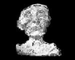
MERNEPTAH (SIN RAMZESA II)
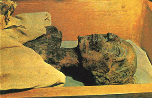
RAMZES II
1975. godine dr. Bucaille izvršio je detaljan pregled faraonove mumije, koja je
donesena u Kairo. Njegovi nalazi su ga potakli da napiše u cudenju: “Oni koji
traže medu modrenim podacima dokaz za svete knjige, naci ce sjajnu ilustraciju
Kur’anskih ajeta, koji se bave faraonovim tijelom, posjetom sali kraljevskih
mumija egipatskog muzeja u Kairu.
U ranom VII stoljecu Kur’an je ustvrdio da je faraonovo tijelo sacuvano kao
znak za ljude, ali je tek i XIX-om stoljecu, kada je njegovo tijelo otkriveno,
došao konkretan dokaz Kur’anskog predskazanja. Da li je potreban još ikakav
dokaz da je Kur’an knjiga od Allaha dž.š? Sigurno je da medu knjigama ljudi
nema knjige koja nalikuje ovoj knjizi.
(11:44) BRDO DŽUDI – PRISTANIŠTE NUHOVE LAÐE
’I bi receno: “O Zemljo! Progutaj vodu svoju!”
I: “O nebo! Prestani!” I opade voda, i naredba bi izvršena i nasuka se na
Džudijj, i bi receno: “Daleko bio narod zalima!”
(Kur’an, 11:44)
Posljednjih godina cinjeni su napori da se locira mjesto pristanka Nuhove lade.
Ti pokušaji ce se vjerovatno nastaviti dok ne budemo imali odgovore koje želimo
da imamo. Kur’an iznosi pricu o poslaniku Nuhu, njegovoj izgradnji lade,
ljudima koji su mu se pridružili i samom potopu, u detalje. Voda je izbila iz
narocite peci, što su slijedili i brojni drugi izvori, kao i jak pljusak s
neba. Vezano za ajet 44 sure Hud Mevdudi kaže: “Brdo Džudi nalazi se
sjeveroistocno od ostrva Ibn Umer u Kurdistanu. Prema Bibliji, mjesto pristanka
barke je Ararat, što je ime za jednu planinu, kao i za citav lanac planina u
Armeniji.
Ararat, kad je u pitanju planinski lanac, proteže se od platoa Armenije ka
južnom Kurdistanu. Planina zvana Džudi je dio ovoga lanca i cak i danas nosi
isto ime. U drevnim historijskim zapisima spominje se brdo Džudi kao mjesto
pristanka lade. Oko 250 godina prije nove ere babilonski svecenik Berasus pisao
je historiju svoje zemlje baziranu na kalidejskoj tradiciji. On spominje Džudi
kao mjesto pristanka Nuhove lade. Historija koju je pisao Abydenus, Aristotelov
ucenik, takode je u skladu s ovim. Abydenus nadalje kaže da su mnogi ljudi
Mesopotamije posjedovali komade lade, koje su koristili za vradžbine. Oni su
mljeli te komade u vodi i pripremali ih za bolesne, kako bi ih oslobodili
njihovih bolesti.
U vezi sa ovim velikim dogadajem, susrecemo se sa pitanjem da li je potop bio
univerzalan, ili je bio ogranicen samo na podrucje koje je naseljavao Nuhov
narod. Na ovo pitanje nema odgovora do današnjeg dana. Pod uticajem izraelskih
tradicija neki vjeruju da je potop bio univerzalan (Postanak, 7:18-24).
Kur’an ipak to eksplicitno ne kaže. Postoji nekoliko aluzija u Kur’anu da je
nekoliko uzastopnih generacija covjecanstva potomstvo onih koji su spašeni na
ladi. Ali, to nužno ne znaci da je potop zahvatio citav svijet. Takode je
moguce da je u tom historijskom trenutku ljudska populacija bila ogranicena na
podrucje koje je potopljeno i da su oni koji su rodeni poslije potopa,
postepeno kasnije izvršili naseljavanje i drugih dijelova svijeta. Ovaj stav
potkrepljuju dvije stvari. Prvo davni historijski podaci, arheološka otkrica i
podaci iz geologije daju dokaze da se Veliki potop dogodio u dalekoj prošlosti
u regionu Tigris-Eufrat. Nema takvih podataka za opci potop.
Drugo, postoji tradicija da je Veliki potop bio poznat svim zajednicama kroz
godine. Takve tradicije mogu se cak naci u udaljenim regionima kao što je
Australija, Amerika i Nova Gvineja.
Iz ovoga se namece zakljucak da su nekada u prošlosti preci svih naroda živjeli
zajedno u podrucju koje je zadesio potop. Odatle su se njihovi potomci razišli
i raselili na razlicite strane svijeta, a sjecanje na Veliki potop se održalo
medu njima.
(12:4) JEDANAEST PLANETA
Sastojeci se od Sunca, devet poznatih planeta, 67 satelita (mjeseci), miliona
asteroida i milijardi kometa, naš Suncev sistem je oaza svjetla, toplote i
života.
Unutrašnji Suncev sistem sastoji se od Sunca, Merkura, Venere, Zemlje i Marsa.
Planete vanjskog Suncevog sistema su: Jupiter, Saturn, Uran, Neptun i Pluton.
“Kad rece Jusuf ocu svom: ’O oce moj! Uistinu sam ja vidio
jedanaest planeta i Sunce i Mjesec. Vidio sam ih sebi potcinjene.”
(Kur’an, 12:4)
Šta je sa desetom i jedanaestom planetom?
Astronomi su pronašli nagovještaj masivnog, dalekog, još nevidenog objekta na
ivici Suncevog sistema - možda deseti planet - koji izgleda da otiskuje komete
prema unutrašnjem Suncevom sistemu iz orbite udaljene tri triliona milja.
Dva tima ucenjaka - jedan iz Engleske, a drugi sa Univerziteta Lafajet u
Luizijani - nezavisno su došli do ovakvog zakljucka, zasnovanog na jako
elipticnim orbitama tzv. dugoperiodicnih kometa, koje poticu od ledenog oblaka
krhotina daleko, daleko iza Plutona.
Procjenjuje se da bi taj planet mogao imati masu izmedu jednoga i deset
Jupitera. Kako on orbitira, gravitaciono djelovanje remeti ledene krhotine
vanjskog Suncevog sistema, prouzrokujuci da se neke od njih zalete prema Suncu
kao komete.
Još niko nije direktno vidio deseti planet. Ono što iznenaduje jeste da
postojeci planet orbitira na udaljenosti tri triliona milja - pola svjetlosne
godine od Sunca. Nama najbliža zvijezda je daleko 4 svjetlosne godine.
Na tako velikoj udaljenosti deseti planet je previše nejasan da bi se vidio
sadašnjim teleskopima, mada za to postoji nada. Naredna generacija
infra-crvenih teleskopa ce možda moci da ga registruje.
(13:2) GRAVITACIONE SILE - ILI, ŠTA DRŽI NEBO?
Danas ucenjaci govore o gravitacionim silama koje drže nebeska tijela na
odredenim rastojanjima i sprecavaju da dode do medusobnih sudara. Kako su do
ovakvih saznanja mogli doci prvi citaoci Kur’ana? Bog nam kaže u Kur’anu da je
On taj koji je uzdigao nebo (Kur’an, 55:7) i da ga On drži da ne padne na
Zemlju (Kur’an, 22:65). Ali, kako to Bog cini?
Da je autor Kur’ana covjek, njemu bi bilo veoma lahko kopirati odgovor na ovo
pitanje iz Biblije. Medutim, danas niko takvom odgovoru ne bi vjerovao.
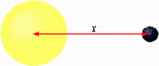 |
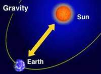 |
U novoj americkoj Bibliji nacrtana je slika kako autori Biblije zamišljaju
svijet. Na toj slici nebo podsjeca na izvrnutu posudu, koja je poduprta
stubovima. Zemlja na toj slici je ravna i poduprta je potpornjima. Nakon
podugog opisa te slike urednici Biblije zakljucuju da je to ideja “prednaucnog
koncepta univerzuma”. U vrijeme kada je Kur’an objavljivan svako je lahko mogao
povjerovati u taj opis, koji se vec mogao naci u Bibliji. Tek u modernom
vremenu ljudi znaju malo više.
Bog kaže u Kur’anu da je On stvorio nebesa:
“Stvorio je nebesa bez stubova koje vidite, i postavio po
Zemlji planine stabilne da vas ne trese, i razasuo po njoj svakovrsne
životinje. I spustili smo s neba vodu, pa ucinili da na njoj iznikne (bilje)
svake vrste plemenite.”
(Kur’an, 31:10)
Ponovo Kur’an kaže:
“Allah je Taj koji je podigao nebesa bez stubova koje vidite,
zatim se postavio na Arš. I potcinio je Sunce i Mjesec; svakoje plovi do roka
odredenog. Upravlja stvar; razlaže znakove, da biste vi u susret Gospodara svog
bili sigurni.” (Kur’an, 13:2)
Ova dva ajeta pobijaju vjerovanje da nebesa drže stubovi, koji ih sprecavaju da
ne padnu na Zemlju.
Gravitacija je univerzalna privlacna sila, koja djeluje izmedu materije. Ona je
najslabija poznata sila u prirodi i zato ne igra nikakvu ulogu unutrašnjih
karakteristika materije. Ali, zbog njene dalekosežnosti i univerzalnosti, ona
ipak uoblicava strukturu i evoluciju zvijezda, galaksija i citavog kosmosa.
Trajektorije tijela Suncevog sistema odredene su zakonom gravitacije, dok na
Zemlji sva tijela imaju težinu ili silu gravitacije proporcionalnu njihovoj
masi, koju Zemljina masa luci na njih. Gravitacija se mjeri ubrzanjem, koje
daje slobodno padajucim objektima. Na Zemljinoj površini gravitaciono ubrzanje
je 9,8 m/s. Tako, za svaku sekundu pada objekta (koji slobodno pada), povecanje
njegove brzine iznosi 9,8 m/s.
(13:41) SPLJOŠTENOST ZEMLJE
“Zar ne vide da Mi dolazimo Zemlji, umanjujuci je s krajeva
njenih? A Allah presuduje - nema tog ko ce suzbiti presudu Njegovu; a On je brz
obracunom.”
(Kur’an 13:41)
U toku nekoliko stotina godina postala je opce prihvacena cinjenica da je svijet
okrugao. Vecina ljudi misli da je to sfera, nešto nalik cvrstoj lopti. U
stvarnosti Zemlja je skoro, ali ne u potpunosti, sfericna. Ona ima lagahno
ispupcenje na ekvatoru. Mjereno na nivou mora precnik Zemlje na ekvatoru iznosi
12.756,3 km.
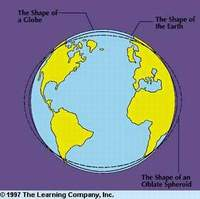
Udaljenost od sjevernog do južnog pola, takode mjerena na morskom nivou, iznosi
12.713,6 km. Kad se uporede ova dva precnika, razlika izgleda mala - samo 42,7
km. Ali, uporedeno sa visinama na Zemljinoj površini, to je veliko. Npr.
najviša planina, Mount Everest manja je od 9 km iznad površine mora.
Oblik Zemlje originalno je izracunat mjerenjima kilometar po kilometar po
kontinentima. Danas vještacki sateliti imaju mnogo tacnije i kompletnije mjerne
alate. Matematicari pažljivo mjere orbite vještackih satelita, a zatim
izracunavaju gravitacionu silu, kojom Zemlja djeluje na satelit. Iz ovih
kalkulacija oni dobijaju oblik Zemlje.
(15:28, 29) BESMRTNOST DUŠE
“I kad rece Gospodar tvoj melecima: “Uistinu! Ja sam Taj
koji ce stvoriti smrtnika od zvecece ilovace, od blata oblikovanog.
Pa kad ga sredim i udahnem u njega od Duha Svog, tad mu padnite nicice.”
(Kur’an, 15:28, 29)
“A doista smo covjeka stvorili od ekstrakta gline,
Zatim ga smjestili (kao) kap sjemena u boravište cvrsto;
Potom kap sjemena stvorili zakvackom, pa zakvacak stvorili grudom mesa, pa
grudu mesa stvorili kostima, pa zaodjenuli kosti mesom, zatim ga sazdali
stvorenjem drugim. Pa blagoslovljen neka je Allah, Najbolji od stvoritelja!”
(Kur’an, 23:12-14)
Drugim rijecima, meleci su ucinili sedždu duši, a ne tijelu. Ovo novo stvorenje,
tj. ljudska duša (jer ima atribute duha Stvoritelja) postaje svjesna duhovne
privlacnosti Stvoritelja i ustanovljuje sebe kao samosvjesni entitet razlicit
od svog smrtnog organizma, stvorenog od supstance Zemlje.
Cinjenica da ljudska duša nadilazi zakone prirode ukazuje da ljudska osobenost
ostaje netaknuta od procesa raspada i dekompozicije, koji kulminira u raspadu
tijela. Ta duša preživljava smrt kao što je preživjela i mnoge promjene, kroz
koje prode fizicko tijelo za svog života. Uobicajene primjedbe na
preživljavanje poslije smrti zasnivaju se na cinjenici fizickog raspada. Kur’an
istice da se to ne može odnositi i na dušu:
’I govore: “Zar kad budemo kosti i komadici, - hocemo li
uistinu mi biti podignuti (kao) stvorenje novo?”
Reci: “Budite kamenje ili gvožde,
Ili stvorenje od onog šta je veliko u grudima vašim.” Tad ce reci: “Ko ce nas
povratiti?” Reci: “Onaj koji vas je stvorio prvi put.” Tad ce ti zatresti
glavama svojim i reci: “Kad ce to?” Reci: “Možda je blizu.”
(Kur’an, 17:49-51)
(16:8) STALNI PROCES STVARANJA
“......... A stvara šta ne znate.”
(Kur’an, 16:8)“A Allah je svaku životinju stvorio od vode. Pa od njih je ko ide
na trbuhu svom, i od njih je ko ide na dvije noge, i od njih je ko ide na
cetiri. Allah stvara šta hoce. Uistinu! Allah nad svakom stvari ima moc.”
(Kur’an, 24:45)
Ova dva ajeta, izmedu ostalog, pokazuju da Allah nije završio stvaranje.
Naprotiv proces stvaranja je u toku. Ovo je veoma važno sa naucne tacke
gledišta jer mi postepeno pocinjemo uvidati i razumijevati prirodne fenomene
koji se još dogadaju. Jedan izuzetan primjer naših posmatranja jeste nastanak
galaksija koje se pojavljuju iz velikih maglina. Drugi primjer je razvoj vrsta
sa dokazima o postojanju cudnih i egzoticnih “meduoblika” životnih formi
pretvorenih u fosile.
Ova dva primjera su samo vrh ledenog brijega. Slijedeci izvadak iz knjige
“Kosmicki otisak” fizicara Pola Dejvisa podvlaci rastucu svjesnost o
neprestanom stvaranju: “Sve veci broj ucenjaka i pisaca dolazi do zakljucka da
sposobnost fizickog svijeta da se sam organizuje cini fundamentalnu, duboko
misterioznu karakteristiku univerzuma.
Cinjenica da priroda ima kreativnu moc i da je u stanju proizvesti progresivno
bogatije varijante kompleksnih oblika i struktura, predstavlja izazov samim
temeljima savremene nauke. “Najveca zagonetka kosmologoje” piše Karl Poper,
dobro poznati filozof, “mogla bi biti … da je univerzum kreativan.”
(16:12) ORGANIZACIJA UNIVERZUMA
Ono što Kur’an spominje o organizaciji univerzuma bitno je stoga
što to daje nove cinjenice o Božijoj objavi. Kur’an se ovim pitanjem bavi
dubinski, za razliku od ranijih objava.
Važna cinjenica je što Kur’an ne sadrži teorije koje su preovladavale u vrijeme
njegove objave, koje su se ticale organizacije nebeskog svijeta. Da je autor
Kur’ana bio covjek, on bi prirodno ukljucio ideje iz tog vremena. Ali mnoge od
tih postavki pokazale bi se kasnije kao netacne. Kako je autor Kur’ana imao
dovoljno znanja da iskljuci takve ideje, izuzev da je autor sam Bog? Oni koji
kažu da je Muhammed a.s. autor Kur’ana, misle da su Arapi bili veliki znalci na
polju nauke, a Muhammed je navodno bio jedan od njih.
Ovo objašnjenje se bazira na pogrešnoj pretpostavci da su Arapi poznavali nauku
prije objave Kur’ana. Cinjenica je da je nauka u islamskim zemljama došla
poslije Kur’ana, a ne prije. U svakom slucaju naucno znanje iz tog velikog
perioda nije moglo biti dovoljno da bi ljudsko bice napisalo neke ajete, koji
se nalaze u Kur’anu. Moderni astronomi su svjesni da se zvijezde i planete drže
na preciznim rastojanjima jedne od drugih. Da ovo nije cinjenica, sudar izmedu
njih bio bi neizbježan. Autor Kur’ana bio je takoder ovoga svjestan. U Kur’anu
citamo:“Sunce i Mjesec su po proracunu.”
(Kur’an, 55:5)Ponovo citamo:
“I potcinio je za vas Sunce i Mjesec - oboje trajno, i
potcinio je za vas noc i dan.”
(Kur’an, 14:33)
Izraz “oboje trajno” je prijevod arapske rijeci daaib - što ovdje znaci
posvetiti se necemu uporano i postojano u skladu sa utvrdenom navikom, a to je
upravo ono kako se ponašaju Sunce i Mjesec.
Drugi ajet u Kur’anu kaže:
“I potcinio je za vas noc i dan, i Sunce i Mjesec, i zvijezde
su potcinjene naredbi Njegovoj. Uistinu! U tome su znaci za ljude koji
razumiju.”
(Kur’an, 16:12)
Red i poredak u univerzumu je temelj za njegovo ocuvanje. Bog koji
ih je potcinio tom redu, znao je to, naravno, prije svakog naucnika.
(16:15) STABILIZIRAJUCE PLANINE
Temeljna razlika izmedu kontinentalnih planina i okeanskih planina jeste u
njihovom materijalu. Kontinentalne planine su u osnovi napravljene od
sedimenata, dok su okeanske planine sastavljene od vulkanskih stijena.
Kontinentalne planine su formirane komresionim silama, dok su okeanske planine
formirane silama razvlacenja. Zajednicka karakteristika oba tipa planina jeste
što imaju temelj na kojem planina pociva. U slucaju kontinentalnih planina,
lahki materijal male gustoce proteže se sa planine u dubinu Zemlje kao korijen.
U slucaju okeanskih planina takoder postoji lahki materijal koji podupire
planinu kao temelj, ali je on nešto proširen.
Kada su u pitanju gustine, onda obje vrste odraduju isti posao podupiranja
planina. Zbog toga je funkcija temelja (korjena) da podupire (drži) planine
prema Arhimedovom zakonu.
Sve planine bile one na kopnu ili u moru, imaju konturu grebena. Da li je iko
mogao u vrijeme poslanika Muhammeda a.s. znati kakav je oblik tih planina? Da
li je iko mogao zamisliti da jedna kruta masivna planina, koju on pred sobom
vidi, ima svoje produžetke u Zemlji i da ima svoj korijen, kako tvrde naucnici.
Veliki broj knjiga geografije, kada opisuju planine, opisuju samo onaj dio,
koji je iznad nivoa tla. To je zbog toga što ih nisu pisali strucnjaci geolozi,
a o tome nas upoznaje savremena nauka, a Allah u Kur’anu kaže:
“Zar nismo ucinili Zemlju posteljom,
A brda stubovima (klinovima)?”
(Kur’an, 78:7)
Planine imaju znacajnu ulogu u stabilizaciji Zemljine kore. Evo kako to tacno
Kur’an opisuje prije 14 stoljeca:
“I brda: ustabilio ih je.”
(Kur’an, 79:32)
I kaže:
“I razbacao je po Zemlji stabilne planine, da vas ne trese,
i rijeke i puteve, da biste se vi uputili.”
(Kur’an, 16:15)
Ucenjaci ne mogu znanje, objavljeno poslaniku Muhammedu od Allaha i koje je
sadržano u Kur’anu, pripisati nikakvom covjeku, niti naucnom autoritetu tih
vremena, jer su naucnicima te tajne bile nepoznate.
Šta više, ljudi nisu mogli naci nikakvo objašnjenje, pa su to znanje morali
pripisati nekoj vanzemaljskoj sili. Stabilizacija planinama.
Planine koje su se formirale u toku hladenja Zemljine kore igraju znacajnu
ulogu, kao što na to ukazuju geološke teorije. One doprinose držanju
kontinenata na njihovim mjestima. Kontinenti plutaju na rastopljenom
materijalu, koji leži ispod njih. Opcenito debljina Zemljine kore je oko 5
kilometara.
Pa ipak, debljina kore ispod planina proteže se i do 35 kilometara. To je iz
razloga što ispod svake planine postoji njen korijen nalik na njen dio iznad
Zemljine površine. Ti korjeni imaju zadatak da kao klinovi fiksiraju Zemlju.
Ovo je veoma precizno receno u Kur’anu:
Moderna geološka teorija takode tvrdi da kopno nije stabilno. Tu su dva glavna
faktora:
1. Pomjeranje toponima zbog erozije vodom, vjetrom ili ledom. Rijeke npr.
odnose milione tona zemlje u more. Jaki vjetrovi erodiraju planinske vrhove,
dok topljenje leda pomjera enormne kolicine materijala na svome putu.
2. Zona kopna se takode smanjuje regresijom, tj. postepenim spuštanjem
priobalnog dijela kopna ispod nivoa mora.
“I uistinu, vama je u stoci ibret: napajamo vas od onog šta
je u trbusima njenim izmedu probave i krvi, mlijeko cisto, pitko pijacima.”
(Kur’an, 16:66)
Gornji ajet iz Kur’ana skrece našu pažnju na ulogu krvi u distribuciji hrane.
Treba imati na umu da je formalno cirkulaciju krvi otkrio jedan muslimanski
ucenjak 600 godina nakon Muhammedove smrti, a Zapad je to upoznao preko
Vilijama Harvija 1000 godina nakon Muhammedove smrti.
Da je Muhammed a.s. bio autor Kur’ana, kako je on mogao znati u vrijeme kada je
živio, da se probavljena hrana transportira putem krvi i da zatim postaje
konstituent mlijeka, kojeg luce mlijecne žlijezde.
(16:68, 69) PCELA
“I objavio je Gospodar tvoj pceli: “Pravi u brdima kuce i u
drvecu i u onom šta usprave,
Zatim jedi od svih plodova, i slijedi puteve Gospodara svog ponizno. Iz trbuha
njihovih izlazi napitak razlicitih boja njegovih, u njemu je lijek za ljude.
Uistinu, u tome je znak za ljude koji razmišljaju.”
(Kur’an, 16:68,69)
Opcenito je poznato da je med fundamentalni izvor hrane za ljudsko tijelo, a
ipak vrlo malo ljudi zna nešto o izvanrednim osobinama njegovog proizvodaca,
pcele. Kao što je poznato, nektar je izvor hrane za pcele, a on se zimi ne može
naci. Iz ovog razloga pcele kombinuju nektar koji sakupe u toku ljeta sa
narocitim sekretima svoga tijela, i proizvedu novu hranljivu supstancu, med, i
skladište je za nadolazece zimske mjesece. Važno je primjtiti da je kolicina
meda kojeg uskladište pcele daleko veca od njihovih stvarnih potreba. Pitanje
koje nam se namece jeste cemu ovolika pretjerana proizvodnja, koja izgleda kao
gubljenje vremena i energije? Odgovor na ovo pitanje nalazi se u ajetu, gdje
kaže da je pcela tako “poucena” od svog Gospodara.
Pcele instiktivno proizvode med, ne samo za sebe, nego i za ljude. Cinjenica je
da pcele, kao i mnoga druga stvorenja na zemlji rade za covjeka, kao što kokoš
leže najmanje jedno jaje na dan, mada joj nije potrebno, ili kao što krava daje
daleko više mlijeka, nego što je njenom teletu potrebno.
Pcele koriste heksagonalnu strukturu milionima godina za izradu saca (nadeni
fosil pcele star je oko 100 miliona godina). Cudo je zašto su pcele izabrale
heksagonalnu strukturu, a ne petougao ili osmougao? Odgovor daje matematika.
Šestougaona struktura je najpogodniji geometrijski oblik za maksimalno
iskorištenje jedinice površine. Da su celije saca konstruisane u nekom drugom
obliku, bilo bi dosta izgubljenog prostora te bi se na taj nacin manje meda
moglo uskladištiti i pcele bi se manje time okoristile. Ako bi dubine bile
iste, trouglaste ili kvadratne celije sadržavale bi istu kolicinu meda kao i
šestougaone. Medutim, izmedu svih tih geometrijskih oblika šestougaonik je taj,
koji ima najmanji obim. Dok oni svi imaju istu zapreminu, kolicina voska
potrebna za šestougaone celije je manja od potrebne kolicine za trougaone ili
cetverougaone celije. Zakljucak je da šestougaona celija zahtijeva minimalnu
kolicinu voska za svoju konstrukciju, dok istovremeno može uskladištiti najvecu
kolicinu meda. Ovaj rezultat dobijen nakon mnogih geometrijskih kalkulacija
sigurno nisu izracunale same pcele. Ove sicušne životinjice koriste
heksagonalni oblik urodeno, samo zbog toga što su poucene i nadahnute od
njihovog Gospodara.
Heksagonalni dizajn celija je praktican iz mnogo aspekata. Celije naliježu
jedna na drugu, tako da medusobno dijele zidove. Ovo još jednom osigurava
maksimalno uskladištenje meda sa minimumom voska. Mada su zidovi celija dosta
tanki, oni su dovoljno jaki da podnesu vlastitu težinu nekoliko puta.
Pcele obicno moraju letjeti na vecim rastojanjima da bi pronašle hranu. One
sakupljaju hranu, cvjetni prah i medne sastojke. Pcela koja pronade cvjetove
vraca se nazad u košnicu da druge pcele obavijesti o tome. Ali, kako ce pcela
opisati mjesto gdje se ti cvjetovi nalaze? Ona to cini plesom. Pcela koja se
vraca u košnicu izvodi neku vrstu akrobacija. Ovaj ples je njeno sredstvo
izražavanja kojim opisuje lokaciju nadenih cvjetova. Ples koji pcela ponavlja
više puta, sadrži u sebi sve informacije o nagibu, pravcu, udaljenosti i drugim
detaljima, koji ce omoguciti drugim pcelama da odu upravo na to mjesto. Ples
pcele lici na osmicu. Pcela oblikuje srednji dio brojke osam tresuci repom i
cineci pokrete cik-cak. Ugao izmedu cik-cak pokreta i linije izmedu Sunca i
košnice daje tacan pravac izvora hrane.
Ipak, poznavanje samoga pravca nije dovoljno. Pcele radilice takode trebaju
znati koliko je to daleko. Zato pcela koja se vraca udaljenost saopštava drugim
pcelama odredenim tjelesnim pokretima. Ona to cini tresenjem donjeg dijela
svoga tijela, prouzrokujuci zracne vrtloge. Npr. da bi opisala rastojanje od
250 metara, ona ce zatresti donjim dijelom tijela 5 puta u 1/2 minute.
Ako je put od košnice do izvora hrane vremenski dugacak, onda se pcela suocava
sa još jednim problemom. Za vrijeme svog povratka u košnicu Sunce se pomjeri za
jedan stepen svake 4 minute. Znaci da bi pcela trebala naciniti grešku od
jednog stepena, vezano za pravac izvora hrane tako da ona o tome mora
obavijestiti druge pcele.
Pcelinje oko sastavljeno je od stotina sicušnih šestougaonih sociva. Svako
socivo se fokusira na vrlo usku površinu kao teleskop. Pcela gledajuci prema
Suncu u bilo koje doba dana uvijek može odrediti svoju lokaciju još dok je u
letu.
Za one koji ne znaju arapski jezik zapanjujuca cinjenica, vezana za gornji
ajet, nije posve jasna. Kur’an govori o pceli koja napušta košnicu u potrazi za
hranom. Da bi opisao ovu aktivnost, on koristi ženski oblik glagola. Za jednog
Arapa ovo pokazuje da je pcela, o kojoj se govori, ženskoga roda.
Možete li navesti razliku izmedu muške i ženske pcele? Cak i ako ostavimo po
strani Muhammedovo doba, za nalaženje razlike izmedu muške i ženske pcele
potreban je specijalista. Ako bismo tvrdili da je Muhammed ovo napisao, onda je
on posebno morao poznavati pcele, provoditi staticke testove, odredivati uzorke
pcela, da bi nekako pronašao da je pcela, koja sakuplja hranu, ženskoga roda i
da su muške pcele nesposobne da se same hrane. Ono što je dato ljudskoj
prirodi, jeste da bi oni pomislili da muške pcele lete i sakupljaju hranu, a da
ženske ostaju u košnici. Ipak to nije slucaj. Muhammed nije bio autor Kur’ana.
Allah dž.š. nam kaže da pcela proizvodi razlicite vrste hrane! Ovo je istina,
obzirom da pcela ima jedinstven stomak, koji proizvodi hranu (med), koji je
razlicitih boja i ukusa. Allah se, takoder, obraca pcelama u ženskom rodu
umjesto u muškom, što je na arapskom jeziku izraženo rjecju “kuuli”(jedi)
i “feslluki” (te slijedi)! Rod pcela dijeli se na tri vrste: matice,
trutovi (muške pcele) i radilice, koje su obavezno ženskog roda. Radilice su te
koje grade košnice, hrane maticu, sakupljaju polen i nektar i štite košnicu.
Allah dž.š. se obraca radilicama i to je razlog što su u Kur’anu glagolski
oblici izraženi u ženskom rodu.
(16:69) CUDO OD MEDA
“Zatim jedi od svih plodova, i slijedi puteve Gospodara svog
ponizno. Iz trbuha njihovih izlazi napitak razlicitih boja njegovih, u njemu je
lijek za ljude. Uistinu, u tome je znak za ljude koji razmišljaju.”
(Kur’an, 16:69)
Da li znate koliko je važan izvor hrane med, kojeg Allah nudi covjeku putem
ovog sicušnog insekta?
Med je sastavljen od šecera kao što su: glukoza, fruktoza i minerala kao što su
magnezijum, kalij, kalcij, soda, hlor, sumpor, gvožde i fosfat. Tu su B1, B2,
C, B6, B5 i B3 vitamini, koji se mijenjaju s kvalitetom nektara i polena. Pored
toga u njemu se mogu naci bakar, jod i u manjim kolicinama cink. Takode je u
njemu prisutno nekoliko vrsta hormona.
Kao što je navedeno u Kur’anu, med ima osobinu da “lijeci ljude.”
Danas su apikultura i pcelinji proizvodi postali novom granom za istraživanje u
zemljama gdje je nauka uznapredovala. Koristi od meda su slijedece: med je
niskokalorican. Kad se uporedi sa istom kolicinom šecera, on daje 40% manje
kalorija nego šecer. Mada tijelu daje veliku energiju, on mu ne povecava
težinu.
Lahka probavljivost. Zbog toga što se molekule šecera u medu lahko
pretvaraju u druge vrste šecera (fruktoza i glukoza) med se lahko probavlja kod
vecine ljudi uprkos tome što ima veliku koncentraciju kiseline. Takode pomaže
bubrezima i crijevima da bolje funkcionišu.
Brzo ulazi u krv. Kada se rastvori u blagoj vodi, med ulazi u krvotok u
roku od sedam minuta. Slobodne molekule šecera u njemu cine da mozak
funkcioniše lakše.
Pomaže nastanak krvi. Med daje znacajan dio energije koji je tijelu
potreban za proizvodnju krvi. Sem toga on pomaže cišcenju krvi. Ima pozitivne
efekte u regulisanju i olakšavanju cirkulacije krvi. Takode on djeluje kao
znacajna zaštita od kapilarnih problema i arterioskleroze.
Suzbija bakterije. Osobina ubijanja bakterija naziva se “inhibicijski
efekat.” Eksperimenti provedeni na medu pokazuju da se njegova osobina ubijanja
bakterija dva puta povecava kada se med razblaži vodom. Vrlo interesantno je
primijetiti da se mlade pcele hrane medom razblaženim od strane pcela koje su
odgovorne za njihov nadzor - kao da one znaju za ovu osobinu meda.
Žele rojal je supstanca koju proizvode pcele radilice unutar košnice. Unutar
ove hranljive supstance nalazi se šecer, proteini, masnoce i mnogi vitamini.
Jasno je da je med, koji se proizvodi u daleko vecim kolicinama nego što je to
potrebno pcelama, stvoren da koristi ljudima. Takode je jasno da pcele takav
nevjerovatan posao ne bi mogle raditi same od sebe.
(17:78) SUNCEVA DEKLINACIJA (DULUK)
Ajet koji ukazuje na deklinaciju Sunca, glasi:
“Obavljaj salat sa naginjanjem Sunca (zapadu), do mraka noci,
i Kur’an (uci) zorom. Uistinu, Kur’an zorom je svjedocen.”
(Kur’an, 17:78)
Deklinacija je ugaono rastojanje Sunca sjeverno ili južno od Zemljinog ekvatora.
Zemljin ekvator je naget pod uglom 23,45 stepeni na ravan Zemljine orbite oko
Sunca, tako da u razlicito vrijeme u toku godine, kako Zemlja kruži oko Sunca,
deklinacija se mijenja izmedu 23,45 stepeni sjeverno do 23,45 stepeni južno.
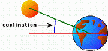 |
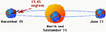 |
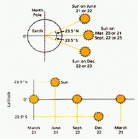 |
Ovo uslovljava nastanak godišnjih doba. Oko 21. decembra sjeverna hemisfera
Zemlje je nageta 23,45 stepeni od Sunca, a to je vrijeme zimskog solsticija za
sjevernu hemisferu i ljetnog solsticija za južnu hemisferu. Oko 21. juna južna
hemisfera je nageta pod uglom od 23,45 stepeni od Sunca i tad je ljetni
solsticij na sjevernoj hemisferi i zimski solsticij na južnoj hemisferi. 21.
marta i 21. septembra su proljetni i jesenji ekvinociji (ravnodnevnice), kada
Sunce prolazi direktno iznad ekvatora. Treba primijetiti da Rakova i Jarceva
obratnica oznacavaju maksimalnu deklinaciju na svakoj Zemljinoj polutki.
Deklinacija se izracunava po slijedecoj formuli:
d=23,45*sin(360/365*(284+N))
gdje su
D=deklinacija,
N=broj dana, 1 januar=1 dan.
(18:25-26) MISTERIOZNA VEZA IZMEÐU hidžretskog i
gregorijanskog kalendara
U kur’anskoj pripovijesti o grupi vjernika koji su bili spašeni od svojih
neprijatelja cudesnim dugim snom u pecini, Bog nam govori o vremenu koje su oni
proveli u pecini, 300 godina, a neki su još dodali i devet. Na prvi pogled ovaj
ajet izgleda nejasan, maglovit. Je li to 300 ili 309 godina? U daljem tekstu
cemo pokušati dokazati da su obe tvrdnje tacne.
Allah dž. š. u suri 18 kaže:
“Pokazivacemo im znakove Naše na horizontima i u dušama
njihovim, dok im ne bude jasno da je on Istina. Zar nije dovoljno, Gospodar
tvoj, što je On nad svakom stvari svjedok?”
(Kur’an, 41:53)
“I ostali su u pecini svojoj tri stotine godina i dodali
devet.
Reci: “Allah je Najbolji znalac tog što su ostali. Njegovo je nevidljivo nebesa
i Zemlje."
(Kur’an, 18:25-26)
Drevni narodi su racunali da je mjesec vrijeme izmedu dva puna Mjeseca, ili broj
dana koji je potreban Mjesecu du okruži oko Zemlje.
Ova mjera se naziva lunarni mjesec i on iznosi 29 dana 12 sati 44 minute 2,8
sekundi. Islamska godina se sastoji od 12 lunarnih mjeseci. 1582. godine
Italijani, Francuzi, Portugalci i Španci su prihvatili moderni Gregorijanski
kalendar. U ovom kalendaru mjerenje dužine godine bazirano je na revoluciji
Zemlje oko Sunca. Dužina mjeseca je prosjecno 1/12 godine (28 do 31 dan) i
udešena je tako da odgovara broju 12 mjeseci u godini koja se zove solarna ili
tropska godina.
Godina je period potreban Zemlji da izvrši jedno orbitiranje oko Sunca, a
postoji više nacina na koji se ovo može izmjeriti. Za izracun kalendara, a da
sve bude u skladu sa godišnjim dobima, najpogodnija je tropska godina, obzirom
da se ona odnosi direktno na ocito Suncevo godišnje kretanje. Tropska godina se
definiše kao interval izmedu sukcesivnih prolaza Sunca kroz tacku proljetne
ravnodnevnice (tj. kad ono prode nebeski ekvator kasno u martu) i iznosi
365,242199 srednjih solarnih dana.
Tropska godina i sinodicki mjesec (lunarni mjesec) su nesamjerljivi, 12
sinodickih mjeseci iznosi 354,36705 dana, skoro 11 dana manje od tropske
godine.
Muslimanska era se racuna od pocetne tacke Hidžre. To je godina u kojoj je
Muhammed a.s. poslanik Islama, prešao iz Mekke u Medinu 622. godine. Drugi
halifa Umer I, koji je vladao od 634-644, odredio je da prvi dan mjeseca
Muharrema bude pocetak godine, tj. 16 juli 622. godine.
Varijacije medu mnogim kalendarima u upotrebi, od antickih vremena pa do danas,
uzrokovane su netacnošcu odredivanja tacne dužine godine. Razlika izmedu
gregorijanskog (solarnog) kalendara koji je usvojen u 16. stoljecu i
hidžretskog (lunarnog) koji je usvojen u Muhammedovo a.s. vrijeme, je 10,87
dana na godinu.
Ovo potvrduje validnost gore citiranog ajeta u kalendarskim sistemima, onom
koji je slijeden u Muhammedovo a.s. vrijeme i onog koji je usvojen 165 godina
kasnije.
Orbitalni parametri Zemlje i Mjeseca
Mjesec:
1.Mjesecev orbitalni period (sidericki):
27,3216615 dana
ili 27 dana 7 sati 43 minuta 11,5 sekundi
ili 327,85993 dana u godini
2. Prosjecna dužina lunarnog dana (sinodickog):
29,5305883 dana
ili 29 dana 12 sati 44 minuta 2,8 sekundi
ili 354,36705 dana u godini
Zemlja:
1. Rotacioni period Zemlje: 23,9345 sati
2. Orbitalni period Zemlje (sidericki): 365,25636 dana
3. Tropska godina Zemlje (sinodicka): 365,242199 dana
KALKULACIJE
S (solarna godina) = 365,242199 dana
L (lunarna godina) = 354,36705 dana
D (razlika) = S - L = 365,242199 – 354,36705 = 10,875149
S / D = 33,5850294
300 x D = 3262,5447 dana
S / L = 1,0306889396
(300 x D) / S = 8,932551356Devet solarnih godina (9 x S) = 3287,179791 dana
Devet lunarnih godina (9 x L) = 3189,30345 dana
300 solarnih godina = 109 572,6597 dana
300 lunarnih godina = 106 310,115 dana
300 x S – 300 x L = 3262,54 dana
309 x S – 309 x L = 3360,42 dana
300 x L +9 x S = 10631,115 + 3287,17979 = 109597,28
I konacno: (300 x S) / L = 309,20668188535
Astronomi godinu dijele na zvjezdanu (365,25636 dana).i tropsku (365,242199
dana). Takoder lunarnu godinu dijele na zvjezdanu (327,85993 dana) i tropsku
(354,36705 dana).
Kako je dužina solarne godine 365,242199 dana, a lunarne 354,36705 dana, to je
razlika dužina 10,875149 dana. Nakon 33,5850294 solarnih godina ukupan broj
ovih razlika iznosi (365,242199 / 10,875149 = 33,5850294). Drugim rijecima,
lunarna godina se podudara sa solarnom u istoj pocetnoj tacci svake 33,5
godine. Svaku takvu tacku možemo smatrati jednim ciklusom od 33.58 godina.
Vrijedno je spomenuti da je poslanik Muhammed a.s. prvu objavu primio šest
godina nakon pocetka ciklusa 610. godine, a da je umro 632. godine šest godina
prije njenog kraja, tako da je period revelacije bio fokalna tacka devetnaestog
ciklusa.
300 godina x 10,875149 dana na godinu = 3262,5447 dana.
Pošto se solarna godina sastoji od 365 dana, 5 sati i 45,5 sekundi (365,242199
dana), onda je kolicnik 3262,5447 / 365,24199 = 8,932556 godina.
Kada se govori terminom godina, onda je to devet (9) godina koje su dodate na
tristo (300) godina.
“On je Taj koji je ucinio Sunce blještecim, a Mjesec sjajnim,
i odredio mu faze, da znate broj godina i racunanje. Allah je to stvorio samo s
Istinom. Razjašnjava znakove ljudima koji znaju.”
(Kur’an, 10:5)
Dužina boravka mladica u pecini kako je navedeno u ajetu je 309. Dok Kur’an
eksplicitno ne navodi broj ljudi u pecini, on navodi dužinu njihovog boravka,
ali sa komentarom “Allah je Najbolji znalac tog što su ostali...”
Da li je ovaj komentar usmjeren na to da se pokaže tacnost ovog broja u vremenu
kada je bilo toliko mnogo razlicitih tvrdnji i mišljenja o njemu? Ili postoji
neki drugi cilj? Vecina tumaca zastupa prvi stav, ali zar nije moguce da stavka
“Allah je Najbolji znalac tog što su ostali...” nagovještava da Allah najbolje
zna istinu o broju 309, njegovom znacenju i tajnama i mudrosti koja se krije
iza perioda koji su ljudi u pecini proveli?!
Mnogi tumaci, prošli i savremeni, smatraju da je 300 solarnih godina jednako
309 lunarnih godina. Broj 9 za njih predstavlja povecanje kada se 300 solarnih
godina pretvori u lunarne:
(365,242199×300) ÷354,36705 = 309,20668
Ovakvo tumacenje je možda ono što sugestira kuranski tekst.
Zakljucak
300 solarnih godina ima 109572,6597 dana dok 300 lunarnih godina ima 106310,115
dana. Razlika izmedu njih je 3262,54 dana. Ovaj broj dana bliži je 9 solarnih
godina nego 9 lunararnih godina.
To znaci da su ljudi u pecini ostali 300 solarnih godina, odnosno 300 lunarnih
sa 9 pridodatih solarnih godina.
Broj 300 ostaje nepromjenljiv, a dodatak dolazi kao rezultat razlike koncepata
solarne i lunarne godine. Dodatak od 9 solarnih godina se onda prirodno uklapa
u ovaj proracun.
(18:90) OZONSKI ZAŠTITNI SLOJ I OZONSKE RUPE
Vjerovatno smo svi culi kako ljudi govore o ozonskim “rupama” u atmosferi naše
planete. Tanjenje ozonskog sloja i rupe u njemu izazvale su ozbiljnu
zabrinutost.
Sunce kao i svaka druga zvijezda zraci u širokom podrucju talasnih dužina.
Vidljivi talasi, koje nazivamo Suncevi zraci, su samo dio te radijacije, a oni
leže izmedu ultraljubicastih i infracrvenih zraka. Sunce takode zraci i na
vecim talasnim dužinama koje ljudsko oko ne može vidjeti, a to je podrucje
infracrvenih i radio talasa, a takode i u podrucju kracih talasnih dužina od
onih koje mi možemo vidjeti, kao ultravioletni, X zraci i gama zraci.
Ti kratki talasi (X i gama zraci) u potpunosti bivaju blokirani u gornjim
slojevima Zemljine atmosfere, dok vecinu ultravioletnih zraka apsorbuje ozonski
sloj. Samo mala kolicina ultavioletnih zraka može prodrijeti.
Šta je ozon?
Ozon je plavicasti gas koji je štetan za udisanje. Sastavljen je od tri atoma
kisika.
Razlicite vrste ultraljubicastog zracenja koje proizvodi Sunce konstantno
proizvode i uništavaju ozonske molekule. Normalno, proizvodnja i razaranje
balansira tako da je kolicina ozona u bilo kom datom vremenu dosta stabilna.
Šta je to ozonski sloj?
Ozonski sloj je jedan gigantski zaštitni kišobran stvoren od sloja ozona koji
obavija Zemlju. Taj sloj je debljine oko 20 kilometara, a nalazi se na 15-35 km
iznad Zemljine površine u gornjoj atmosferi (stratosferi).
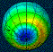 |
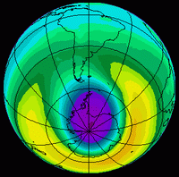 |
Ozon se nalazi u svim slojevima atmosfere, a najviše ga je u stratosferi oko
90%. Cak i mala koncentracija ozona igra znacajnu ulogu. Ultravioletno zracenje
može oštetiti celije živih organizama, ljudi, životinja i biljaka. Dok male
doze ovog zracenja rezultiraju kao opekotine od Sunca, dotle vece doze mogu
izazvati katarakte ili rak kože, a mogu uticati i na rast biljaka.
Nalik na dobre suncanice, ozonski sloj djeluje kao prirodni filter, blokirajuci
vecinu štetnih ultraljubicastih Suncevih zraka.
Razaranje ozona uzrokovano je kompleksnim hemijskim reakcijama ukljucujuci hlor
i brom. Mada se mala kolicina ovih elemenata prirodno nalazi u stratosferi -
npr. hlor proizvode vulkanske erupcije - najvece uništenje ozona uzrokovale su
u zadnjih 20 godina hemikalije koje su proizveli ljudi.
Detaljni sastav Zemljine atmosfere i otkrice ozonskog sloja dogodilo se mnogo
stoljeca poslije objave Kur’ana, pa ipak Kur’an spominje ovu zaštitu od
Suncevih zraka.
Tumacenje kur’anskog ajeta 18:90.
“Dok - kad stiže izlazištu Sunca, nade ga izlazi nad ljudima
kojima nismo od njega nacinili štit.”
(Kur’an, 18:90)
Iz citiranog ajeta se da izvuci 5 zakljucaka:
1. Rijec štit ukazuje da od Sunca dolazi nešto štetno, jer da nema te štete, ne
bi bilo potrebe za zaštitom.
2. U ranijim tumacenjima Kur’ana uzimalo se da rijec štit oznacava planine ili
brda, ali planine i brda nas ne štite od štetnog djelovanja Suncevih zraka,
izuzev kada bi citav život proveli unutar njih.
3. Ajet pokazuje da su ljudi koji su spomenuti u njemu, a koji nemaju štita,
ustvari, izuzetak i da ostatak svijeta ima taj štit.
4. Rijeci “nismo nacinili štit” pokazuju da je taj štit prirodan (Božiji), a ne
ljudski. Ovo automatski eliminiše sugestiju da bi to mogle biti kuce ili nešto
što je napravio covjek.
5. Ajet ukazuje na prisustvo ljudi na tom mjestu i da to mjesto ili ta zona,
nije zašticena. Ovo je u skladu sa sadašnjim znanjem, vezanim za postojanje
rupa u ozonskom sloju. Opcenito se smatra da su te rupe odvajkada postojale.
Stvar je poprimila iznenada dramatican tok, zbog toga što se velicina ovih rupa
povecava kao rezultat covjekovog onecišcenja planete.
(18:109) PROGRAMSKI INTELEKT
“Stvaranje vaše i podizanje vaše (iz mrtvih) je samo - kao
duše jedne. Uistinu! Allah je Onaj koji cuje, Onaj koji vidi.”
(Kur’an, 31:28)
Kloniranje podrazumijeva izvodenje grupe identicnih genetskih celija, ili
citavog organizma iz jedne originalne celije ili organizma:
’Reci: “Kad bi more bilo tinta za rijeci Gospodara mog,
sigurno bi se iscrpilo more prije no što bi se iscrpile rijeci Gospodara mog,
makar mi donijeli slicno njemu, (kao) pojacanje.”
(Kur’an, 18:109)
Doslovna istina:
U momentu zaceca kada se sjedine spermij i jajašce, biva odreden nevjerovatno
veliki broj personalnih crta i uzoraka rasta.
Procjenjuje se da genetska informacija, koju nosi svaka ljudska celija, može
popuniti hiljade hiljadustranicnih knjiga u finoj štampi. Gornji kur’anski ajet
bukvalno je dokazan, ako razmotrimo kako sve celije formiraju stvorenje. Ako bi
sve informacije sadržane u svim celijama trebalo da se zapišu, onda bi sigurno:
“... Bi se prije iscrpilo more, nego što bi se iscrpile rijeci Gospodara.”
Razmotrite ovo: jedna celija popunjava hiljade hiljadustranicnih knjiga u finoj
štampi!
Svaka celija ima “program” analogan pisanom kompjuterskom programu tako dobro
organiziran i regulisan da funkcioniše besprijekorno, svaka mala
nefunkcionalnost vodi deformitetima i monstruoznom rastu (npr. rak). Svaka
celija je kao kompjuter programirana da obavlja odredene funkcije. Opšte je
poznato da ce kompjuter funkcionisati jedino ako je programiran. Cinjenica je,
dakle, da mora postojati programirajuci intelekt, koji daje neophodne
informacije za rad sistema.
Programirajuci intelekt, nepromjenjiv i uniforman u svojoj biti je jedan Bog.
(20:50) PROGRAMIRANE CELIJE
Evolucionisti i neodarvinisti klasificiraju celije na primitivne i evolvirane,
što nije istina. 99% celijskih struktura kod svih vrsta je identicno. Ova cifra
je 100% za DNK. Jedina razlika izmedu celija je “program” koji insruira celiju
kako da funkcionira. Zbog toga teorija evolucije pada na samom nivou celije.
Svaka celija je programirana da funkcioniše na poseban nacin. Cak i obicni
korisnik kompjutera zna da ce on raditi samo onako kako je programiran.
Ova cinjenica ukazuje na postojanje programskog intelekta koji sistemu daje
potrebne informacije, kako bi on mogao funkcionirati. Ovo naravno upucuje na
razmišljanje o Stvoritelju života.
“(Musa) rece: “Gospodar naš je Onaj koji je svakoj stvari dao
stvaranje njeno, zatim uputio.”
(Kur’an, 20:50)
Medu biolozima postoji neuhvatljiva enigma, a to je porijeklo genetskog koda i
kako on povecava informacije koje vode sve kompleksnijim i kompleksnijim
strukturama.
Jedino valjano objašnjenje o inteligentnoj prirodi poruka sadržanih u DNK jeste
umiješanost inteligentnog planera. Mi ga zovemo Allah, Bog.
(21:30) PORIJEKLO ŽIVOTA IZ VODE
Kur’an kaže da je život poceo u vodi i da je sam covjek stvoren od vode, a isto
tako i ostale životinje na zemlji. U vrijeme objave Kur’ana ovakvi navodi su za
jednog Arapa izgledali sasvim cudni. Cak i danas ovi ajeti Kur’ana ce izazvati
cudenje, ukoliko su naucne cinjenice o njima nepoznate.
Cinjenica da je sav život poceo iz vode, danas je dobro poznata naucna istina.
Ucenjaci imaju dokaze da su prva živa bica bile alge, a one su živjele u vodi.
Cinjenica da su ljudska bica i životinje stvorene od vode je takode potvrdena,
obzirom da citoplazmu (osnovna komponenta života) u svakoj celiji, preko 80%
cini voda.
Prvi oblik života:
“Zar oni koji ne vjeruju ne vide da su nebesa i Zemlja bili
zatvorena (cjelina), pa smo ih rastrgali. A od vode smo nacinili svaku živu
stvar. Pa zar nece vjerovati?”
(Kur’an, 21:30)
Oni koji tvrde da je Muhammed a.s. napisao Kur’an kažu da je on
imao neke ideje o porijeklu vrsta koje ljudi toga vremena nisu znali, i da je
on imao pristup geološkim i arheološkim podacima i da ih je dobro razumio.
Takva tvrdnja je neumjesna. Kur’an, naravno, pokazuje da potice od Onoga koji
poznaje tajnu univerzuma.
Voda koja se kondenzovala u ranim fazama Zemlje i formirala mora i okeane,
miješala se sa prljavštinom, pri cemu je nastalo blato. Iz oblikovanog blata
rodili su se najjednostavniji živi organizmi u obliku bakterija i
jednocelijskih organizama. Iz ovoga zajednickoga porijekla biljaka i životinja
razvile su se dvije vrste mikroskopskih organizama. Iz prve vrste nastale su
sve biljke, a iz druge su se razvile životinje. Smatra se da su se prvi
primitivni organizmi pojavili prije oko 2,7 milijardi godina. Svi ti organizmi
potekli iz vode, postepeno su se razvili u kompleksne žive strukture, koje su
krenule na kopno. Ova cinjenica data je takoder i u Kur’anu:“........ a od vode
smo nacinili svaku živu stvar.”
(Kur’an, 21:30)Interesantno je da voda koja se nalazi u svim tecnostima našega
tijela (krv, slina, suze, znoj itd.) sadrži isti procenat soli kao što se
nalazi u okeanu.
Od prvobitnih organizama koji su izašli na kopno, razvili su se reptili prije
200 miliona godina. Prve ptice letjele su prije oko 130 miliona godina, a prvi
covjek homohabilis hodao je Zemljom prije milion godina. Prvi homosapiens, o
kojem ucimo kao o našem direktnom pretku, hodao je Zemljom prije 15 hiljada
godina.
“I On je Taj koji je od vode stvorio covjeka, te mu nacinio
srodstvo i tazbinstvo. A Gospodar tvoj je Mocni.”
(Kur’an, 25:54)
Koncept da je ljudsko bice stvoreno od vode može za neznalicu izgledati sasvim
nametljiv. Da sam stajao u pustinji prije 1400 godina i proglasio da sam
napravljen od vode, sigurno bi me smatrali neuracunljivim. Tek prije 200
godina, kada je otkriven mikroskop, utvrdeno je da je bazna supstanca celije
jajašca, iz kojeg se razvija covjek, (citoplazma) sacinjena od 80% vode.
Kako je Muhammed a.s. ili bilo ko drugi iz njegovog vremena mogao imati ovu
cudnu ideju, izazov je ljudskom tumacenju. Sadržaj citoplazme je analiziran i
dokumentiran stoljecima poslije objave Kur’ana.
Slicnu ideju nosi Kur’anski ajet:
“A Allah je svaku životinju stvorio od vode. Pa od njih je
ko ide na trbuhu svom, i od njih je ko ide na dvije noge, i od njih je ko ide
na cetiri. Allah stvara šta hoce. Uistinu! Allah nad svakom stvari ima moc.”
(Kur’an, 24:45)
Standardna “životinjska celija” koja se spominje u svakoj introbiološkoj knjizi,
sadrži svoj glavni dio citoplazmu, sa najmanje 80% vode.
U Kur’anu citamo:
“Zar oni koji ne vjeruju ne vide da su nebesa i Zemlja bili
zatvorena (cjelina), pa smo ih rastrgali. A od vode smo nacinili svaku živu
stvar. Pa zar nece vjerovati?”
(Kur’an, 21:30)“A Allah je svaku životinju stvorio od vode. Pa od njih je ko
ide na trbuhu svom, i od njih je ko ide na dvije noge, i od njih je ko ide na
cetiri. Allah stvara šta hoce. Uistinu! Allah nad svakom stvari ima moc.”
(Kur’an, 24:45)
“I On je Taj koji je od vode stvorio covjeka, te mu nacinio
srodstvo i tazbinstvo. A Gospodar tvoj je Mocni.”
(Kur’an, 25:54)
Voda je najpoznatiji sastojak Zemlje, pokrivajuci više od 70% njene površine.
Sva živa stvorenja u najvecem dijelu su od vode. Npr. ljudsko tijelo sadrži
dvije trecine vode. (Kada kremiraju covjeka, šta mu se dogada? Zašto?) Naucnici
kažu da svi postojeci oblici života zahtijevaju tri osnovna uslova:
temperaturu, vodu i atmosferu.
Svi metabolizmi trebaju vodu da bi preživjeli. Tako životinje koje obitavaju u
sušnim regionima posjeduju tjelesne mehanizme koji ih štite od gubitka vode i
koriste je na najbolji nacin (kamile). Dehidracija kod ljudi može biti rezultat
nedostatka hrane, pica i znojenja, pored ostalih faktora. Ovaj gubitak tecnosti
ima negativan efekat na pravilan rad srca, centralni nervni sistem i organe
koji imaju nježnu muskulaturu. Konacno, kada se gubi tecnost celija, onda
dolaze u pitanje životni hemijski procesi u celijama. Ako se voda ne unese u
organizam, smrt ce obicno nastupiti u roku od nekoliko dana.
Krv svih živih bica sastavljena je od 55% od plazme, a ona se sastoji od 90%
vode. Možemo tako nabrajati dalje i dalje. Opet se nademo sa pitanjem: kako je
Muhammed a.s. mogao znati da su sva stvorenja stvorena od vode, stoljecima
prije nego što su ljudi utvrdili ovu cinjenicu naucnim istraživanjima. Da li je
on nasumice odabrao jedan element, iz bezbrojnih milijardi mogucih izbora?
Zašto on nije tvrdio da su živa stvorenja stvorena od zraka, ili od drveta?
Zašto vode? Odgovor je poznat!
(21:30) NASTANAK UNIVERZUMA-VELIKA EKSPLOZIJA
Univerzum je došao u postojanje milijardama godina ranije u strahovitoj
eksploziji nazvanoj “Big Bang.” U Kur’anu je to izraženo ovako:
“Zar oni koji ne vjeruju ne vide da su nebesa i Zemlja bili
zatvorena (cjelina), pa smo ih rastrgali. ........ Pa zar nece vjerovati?”
(Kur’an, 21:30)
Otkrice velike eksplozije i porijekla života u vodi nacinili su nemuslimani
(“oni koji ne vjeruju”). U pocetku je sva materija i prostor (nebesa) bila
jedna cjelina (jedan komad). Zatim je sve to rastavljeno pomocu onoga što
fizicari opisuju kao “Veliki prasak.” Dokazi o velikom prasku su toliki, da se
on više ne smatra teorijom, nego cinjenicom.
Kur’an daje tacan vizuelni opis teorije “Big bang” o stvaranju kosmosa. To je
tacno onako, kako “nevjernicki” naucnici zamišljaju stvaranje univerzuma iz
jednog komada, koji je potom pomocu “Big banga” pretvoren u mnoštvo segmenata.
Kako možemo objasniti ovu informaciju u Kur’anu, ukoliko on ne bi bio to što
tvrdi da jeste, rijec Sveznajucega Tvorca?
Velika eksplozija je rezultirala iz ekstremno gustog singulariteta. U stvaranju
univerzuma blisko su vezani materija, prostor i vrijeme. Materija i prostor
bili su spojeni kao jedno, a rastavljeni su eksplozijom.
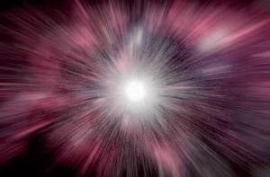 |
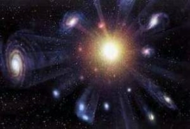 |
Svi podaci, danas dostupni, ukazuju na eksplozivno porijeklo univerzuma, koje
je u postojanje dovelo i prostor i vrijeme. Ovo se upravo odnosi na “Big bang”.
Teorija “Big bang” koja je uspješno preuzela mjesto teorije o stacionarnom
stanju, razvijena je od strane dvojice naucnika neovisno jednog od drugog 1920.
godine (ruski meteorolog Aleksandar Fridman i belgijski matematicar Georges
Lemaitre).Zašto vecina naucnika prihvata teoriju “Velikoga praska”? Prihvatanje
ove teorije od strane naucne zajednice utemeljeno je na brojnim opservacijama.
Te opservacije potvrduju specificna predvidanja ove teorije. Znamo da naucnici
testiraju svoje teorije putem dedukcije i falsifikacije.
Predvidanja vezana za “Big-bang” teoriju i testovi vezani za ovo jesu:
1. Ako se dogodila velika eksplozija, svi objekti u univerzumu bi
trebalo da se udaljavaju jedni od drugih. 1929. godine Edvin Habl je dokazao da
se galaksije u univerzumu doista udaljavaju jedna od druge.
2. Velika eksplozija bi trebala iza sebe ostaviti “odsjaj.” 1960. godine
naucnici su otkrili postojanje pozadinskog kosmickog zracenja, tzv. “odsjaj”
nakon Velike eksplozije. Naša najtacnija mjerenja ove kosmicke radijacije
dobili smo u novembru 1989. od satelita COBE (istraživac kosmickog pozadinskog
zracenja). Mjerenja sa ovoga satelita testirala su važna predvidanja “Big-bang”
teorije. Ovo predvidanje sugestira da je inicijalna eksplozija, koja je dala
rodenje univerzum, trebala stvoriti radijaciju sa spektrom koji slijedi
krivulju crnog tijela. Mjerenja satelita COBE pokazuju da spektar kosmicke
radijacije varira u odnosu na krivu crnog tijela samo 1%. Ovaj nivo greške
smatra se beznacajnim.
3. Ako je univerzum poceo Velikom eksplzijom, ekstremne temperature
trebale su uzrokovati da 25% mase univerzuma postane helijum. To je upravo ono,
što je posmatranjem ustanovljeno.
4. Materija u univerzumu bi trebala biti homogeno distribuirana.
Astronomska posmatranja sa Hablovog teleskopa pokazuju da je materija u
univerzumu opcenito homogeno rasporedena.
5. Kako ce univerzum završiti? Kosmolozi predvidaju dva moguca kraja
univerzuma. Ukoliko je univerzum beskonacan, ili mu nema kraja, trebao bi se
vjecno širiti. Univerzum, koji je konacan ili zatvoren, trebao bi kolapsirati,
kada širenje prestane zbog gravitacije. Kolaps univerzuma završava se kada se
sva materija i energija komprimira u visoko energetsko, super gusto stanje, iz
kojeg je poceo. Ovaj scenario se naziva “Veliki grc.” Neki teoreticari
špekulišu da bi veliki grc mogao proizvesti novu veliku eksploziju, cime bi
poceo novi proces širenja univerzuma. Ovakva predvidanja imaju naziv “Teorija
oscilirajuceg univerzuma.”
(21:32) ATMOSFERSKA ZAŠTITA ZEMLJE
Zemljina atmosfera, tako važna za život na našoj planeti, proteže se 1000 km u
prostor. Nabrojat cemo samo neke od njenih brojnih funkcija:
1. Atmosfera sadrži gasove potrebne za održavanje života biljaka i životinja,
tj. kisik i ugljendioksid.
2. Atmosfera djeluje kao štit koji apsorbuje i vrši disperziju kontinualnog
pljuska meteora, koji ulijecu u gravitaciono polje Zemlje.
Da je atmosferski sloj tanji nego što zaista jeste, ti meteori bi lahko našli
put do Zemljine površine, a pri svojim udarima prouzrokovali bi požare i
ogromnu štetu. Kur’an govori o ovoj funkciji atmosfere:
“I ucinili smo nebo svodom zašticenim; a oni su od znakova
njegovih odvraceni.”
(Kur’an, 21:32)
Rijeci “semaa” i “semawaat” u Kur’anu se koriste sa razlicitim znacenjima.
Rijec “semawaat” (nebesa), koja je množina od “semaa” (nebo) uvijek se koristi
da oznaci nebesa, ili univerzum u cjelini. Rijec “semaa” obicno oznacava
neposredno nebo, ili Zemljinu atmosferu.
Kao primjer ova dva nacina upotrebe u Kur’anu citamo:
“Stvorio je Allah nebesa i Zemlju s Istinom. Uistinu, u tome
je znak za vjernike.”
(Kur’an, 29:44)
Ovdje rijec “semawaat” znaci nebesa, ili univerzumi.
“On je Taj koji spušta s neba vodu - imate vi od nje pice, i
od nje drvlje u kojem napasate.”
(Kur’an, 16:10)
Ovdje rijec “semaa” oznacava nama najbliže nebo.
2. Atmosfera sadrži gasove potrebne za održavanje života biljaka i životinja,
tj. kisik i ugljendioksid.
(21:33) ORBITALNO KRETANJE NEBESKIH TIJELA
Kada covjek pogleda u beskrajne zamršene orbite i u matematicku preciznost
univerzuma, može samo sa divljenjem uzdahnuti. Sve planete kruže oko zvijezda,
a one se okrecu oko centara gravitacije u njihovim sopstvenim galaksijama.
Ovaj precizan balans spomenut je u slijedecim ajetima:
“Sunce i Mjesec su po proracunu.”
(Kur’an, 55:5)
“I nebo! Uzdigao ga je, i postavio mjerilo.”
(Kur’an, 55:7)
Orbite nebeskih tijela spomenute su u ajetu:
“I On je Taj koji je stvorio noc i dan i Sunce i Mjesec: Sve
u orbiti plovi.”
(Kur’an, 21:33, 36:40)
Primijetite da zadnji ajet kaže: “sve”, a ne “oboje”, što pokazuje da je osvrt
na Sunce i Mjesec samo simbolican i da sva druga nebeska tijela slijede ista
pravila. Sunce, Mjesec i njihove orbite.
Danas znamo da Mjesec obide oko Zemlje za prosjecno 29,5 dana. Sunce se takode
obrce u vlastitoj orbiti. Naša galaksija, Mlijecni put, ima 100 milijardi
zvijezda, postavljenih u takvoj formaciji, da galaksija ima oblik diska. Taj
disk se okrece oko svoga centra kao gramofonska ploca.
Jasno je da kako se gramofonska ploca okrece, okretat ce se i svaka tacka na
disku i ponovo doci u pocetni položaj. Slicno tome svaka zvijezda u galaksiji
se krece, kako galaksija rotira oko svoje ose. Jedna od tih zvijezda je i
Sunce.
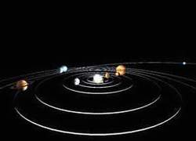 |
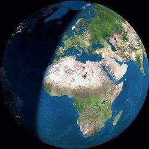 |
Detalji Sunceve orbite su slijedeci:
Za jedan obrt oko svoje ose galaksiji i Suncu je potrebno 250 miliona godina.
Pri tome Sunce putuje brzinom približno 150 milja u sekundi. Spomenuto
predstavlja orbitalno kretanje Sunca, na koje se osvrce Kur’an prije 14
vijekova. A eto, to je novo otkrice. Znanje o Suncevoj orbiti je dostignuce
savremene astronomije.
Kako je autor Kur’ana ovo znao? Cak i nakon objave Kur’ana rani komentatori
nisu mogli pojmiti orbitiranje Sunca i Mjeseca. Komentator Kur’ana iz 10-og
stoljeca Taberi ovo nije mogao objasniti tako da on kaže: “Dužnost nam je da
šutimo, kada nešto ne znamo.” Ovo pokazuje koliko su ljudi bili nemocni da
shvate koncept orbitiranja Sunca i Mjeseca. Iz ovoga je jasno da je Kur’an
iznosio jednu ideju vec poznatu ljudima, komentatori bi je lahko razumjeli. Ovo
potvrduje ono što je Bog rekao svome poslaniku:
“To su neke vijesti nevidljivog koje ti objavljujemo. Nisi ih
znao ti niti narod tvoj prije ovoga. Zato se strpi. Uistinu, ishod je za
bogobojazne.”
(Kur’an, 11:49)
(21:33) SUNCE - PLOVIDBA I ROTACIJA
Kur’an, takode, govori o Suncu i o njegovom nacinu putovanja kroz prostor.
Ponovo covjek može nagadati o prostoru.
Kada se Sunce krece kroz prostor, postoje dvije opcije: može putovati kao
kamen, koji se baci, ili može putovati na poseban nacin. Kur’an navodi ovo
drugo - da se ono krece kao rezultat vlastitog pomjeranja. Kur’an koristi rijec
“sabeha” da bi opisao Suncevo kretanje kroz prostor.
Da bi se citalac ispravno obavijestio o znacenju ove rijeci, navest cemo
slijedeci primjer: ako je covjek u vodi i ako se rijec “sabeha” primijeni na
njegovo kretanje, može se razumjeti da on pliva, krecuci se sam, a ne kao
rezultat direktne sile primijenjene na njega.
“I On je Taj koji je stvorio noc i dan i Sunce i Mjesec: Sve
u orbiti plovi.”
(Kur’an, 21:33)
Tako, kada se ovaj glagol primijeni na Suncevu putanju kroz prostor, to nikako
ne znaci da Sunce nekontrolirano leti kao rezultat toga što je bilo baceno ili
slicno. To jednostavno znaci da se Sunce okrece i rotira dok putuje.To je ono
što Kur’an tvrdi, ali da li je to bilo lahko otkriti?
Može li vam ijedan covjek otkriti da se Sunce okrece? Tek u modernim vremenima
nacinjena je oprema pomocu koje se može gledati u Sunce bez opasnosti da se
oslijepi. Upravo kroz ovakav proces otkriveno je, ne samo da postoje pjege na
Suncu, nego i da se te pjege okrenu jednom u 25 dana.
(21:104) VELIKI GRC KOSMOSA
“Dan kad savijemo nebo kao motanjem svitka za knjige. Kao što
smo poceli prvo stvaranje, ponovicemo ga. Obecanje je na Nama. Uistinu, Mi cemo
biti Izvršitelji.”
(Kur’an , 21:104)
“I ne cijene Allaha pravim cijenjenjem Njegovim, a Zemlja sva
bice u šaci Njegovoj na Dan kijameta, i nebesa ce smotana biti u desnici
Njegovoj! Slavljen neka je On i uzvišen od onog šta pridružuju!”
(Kur’an , 39:67)
Prema modernoj kosmologiji kosmos je poceo prije 10 do 15 milijardi godina s
dogadajem zvani “Veliki prasak.” Od tada se on širi. Ono što ne znamo jeste da
li ce se on nastaviti vjecno širiti. Ako je gustoca materije u univerzumu
dovoljno velika, gravitacione sile ce uzrokovati prestanak širenja univerzuma,
a zatim proizvasti njegovo urušavanje. Ako se to dogodi, univerzum ce skoncati
u drugom kataklizmickom dogadaju, kojeg kosmolozi nazivaju “Veliki grc.”
Teorija “Velikog grca” jeste scenario za kraj univerzuma. Ona kaže da, kada
univerzum bude stariji 50 miliona puta od sadašnje starosti, ili kad bude imao
7,5 x1017 (750 kvadriliona godina), njegovo širenje ce prestati. Zatim, u
pocetku polahko, a onda ubrzano, univerzum ce poceti kolapsirati.
Vrijeme je najneuhvatljivija misterija univerzuma. Niko ne zna šta je stvarno
vrijeme. Albert Ajnštajn je rekao da je vrijeme ono što mi mjerimo sahatima.
Vrijeme prolazi sporo pri velikim brzinama kretanja, a zaustavlja se na brzini
svjetlosti. Vrijeme ima pravac, ono se uvijek krece prema buducnosti. Mi vidimo
kišu kako pada s neba, kako ljudi stare, kako umiru. Nikada ne vidimo da se
razbijena caša vraca u nerazbijeno stanje, ili da se neko vraca iz mrtvih.
Fizicari kao Tomas Gold i Stiven Hoking pretpostavljaju da ce se vrijeme
obrnuti kada kosmos pocne da se skuplja. Neki ajeti Kur’ana sugestiraju da ce
jednoga dana poceti kontrakcija univerzuma i da ce tada poceti Sudnji dan.
“Dan kad savijemo nebo kao motanjem svitka za knjige. Kao što
smo poceli prvo stvaranje, ponovicemo ga. Obecanje je na Nama. Uistinu, Mi cemo
biti Izvršitelji.”
(Kur’an , 21:104)
U gornjem ajetu sažimanje kosmosa uporedeno je sa motanjem svitka za knjigu. To
je trenutak kada bi se vrijeme moglo povratiti. Povratak vremena bi uzrokovao
da ljudi ustanu iz svojih mezara i ponovo ožive. Svaki dogadaj bi se ponovo
zbio u vremenu.
“I nema ništa skriveno na nebu i Zemlji, a da nije u Knjizi
jasnoj.”
(Kur’an, 27:75)
Kako bi se historija Zemlje odvijala unazad, narodi bi se vracali jedni za
drugim. Sva dobra i zla djela, kako individua, tako i naroda, postala bi sasvim
ocita, kako bi vrijeme teklo unazad.
“ I vidjet ceš svaki ummet - klecat ce - svaki ummet ce biti
pozvan knjizi svojoj: “Danas cete biti placeni za ono šta ste radili.”
(Kur’an, 45:28)
Tok vremena unazad ucinio bi da ljudi vide šta su ranije uradili. Ono nece imati
kontrolu nad svojim rukama, nogama, ustima i ocima. Sve dobre i loše stvari,
koje su ranije ucinili ponovo ce uciniti. U tom smisu ruke, noge, itd. postace
svjedoci protiv njih pred Allahom i svim melecima. Oni nece biti u stanju
poreci ništa od lošega što su ucinili.
“Na Dan kad protiv njih budu svjedocili jezici njihovi i ruke
njihove i noge njihove, o onom šta su radili.”
(Kur’an, 24:24)
“Uistinu, Mi vas upozoravamo kaznom bliskom, na Dan kad vidi
covjek šta su unaprijed poslale ruke njegove i rekne nevjernik:“O da sam
prašina!” (Kur’an, 78:40)
“ I kad se poslanicima vrijeme odredi.”
(Kur’an, 77:11)
(22:5) OŽIVLJAVANJE ZAMRLE ZEMLJE
Allah uzvišeni u Kur’anu kaže:
“I vidiš zemlju beživotnu, pa kad spustimo na nju vodu,
ustreperi i uzbuja, i iznikne svaki par prekrasni.”
(Kur’an, 22:5)
“I od znakova Njegovih je što ti vidiš zemlju smirenu, pa kad na nju spustimo
vodu, zatreperi i uzbuja. Uistinu, Onaj koji je oživljava je Oživljavac mrtvih.
Uistinu, On je nad svakom stvari Posjednik moci.”
(Kur’an, 41:39)
Ovaj ajet opisuje šta se dogada sa suhim tlom kada na njega padne voda i
pominje tri faze kroz koje prolazi dok se biljka ne pojavi iznad tla i ne dadne
plodove. Šta savremena nauka kaže o fazama klijanja?
Treperenja tla.
Pod treperenjem tla podrazumijeva se pokretanje cestica tla, a ne kretanje
zemljine kore u cjelini kao u slucaju zemljotresa. Te cestice su sastavljene od
spojenih slojeva zemlje kremenjace i glinice.
Slojevi se nalaze jedan na drugom. Kad voda prodre u te slojeve, ona
prouzrokuje bubrenje blatnih cestica. Tako padanje kiše na tlo u dovoljnoj
kolicini uzrokuje pokretanje zemljinih cestica. Ovo se može objasniti na
slijedeci nacin:
a) Elektrostaticki naboj na površini cestice (koji se javlja nakon dodira s
vodom) uzrokuje njenu nestabilnost, a agitativni pokreti se ne stabiliziraju
osim neutralizacijom ovog naboja njemu suprotnim.
Mi ovdje jasno možemo opaziti Božiju mudrost u stvaranju svih stvorenja u
parovima, što poziva ka stabilnosti i miru.
b) Pokretanje i agitacija cestica tla takoder se dogada zbog njihovih sudara sa
cesticama vode. Kretanje cestica vode nema neki odredeni pravac, pa se cestice
tla tresu i pokrecu iz svog mjesta obzirom da bivaju udarane sa svih strana.
Botanicar Robert Brovn (1828) je zapazio ove kretnje cestica tla i nazvao ih
Braunove kretnje.
Kad god je voda u obilnoj kolicini, to povecava rastojanja izmedu cestica tla i
olakšava njihovo kretanje. Ako se voda smanji, one se približavaju i usporavaju
pokrete, dok kretanje sasvim ne zamre. Tako je ovo kretanje dakle direktno
zavisno od djelovanja vode i cestica tla.
Faza bubrenja.
Pod ovim izrazom se podrazumijeva bubrenje, nadimanje i zadebljanje cestica
tla. Tlo zbog toga raste po velicini rastom pojedinih svojih cestica. Ranije
smo spomenuli da se tlo sastoji od spojenih slojeva.
Izmedu svakog od njih postoje praznine koje dozvoljavaju vodenim cesticama i
rasplinutim jonima da udu. Kada se voda i hranljivi elementi rasplinu u njima,
difundiraju izmedu slojeva, ovo ce rezultirati u povecanju velicine cestica
tla.
Ovo je analogno nadimanju blata (u laboratorijskom eksperimentu) kada se na
njega izlije izvjesna kolicina vode, ono se nadme zbog apsorbcije vode.
Ovdje imamo drugu stvar koja se dogada, a koja drži vodu da ne iscuri zbog
gravitacije, jer cestice nose vodu izmedu njih u slojevima i ona tako ima
mogucnost da zadrži vodene cestice na njenoj površini privlacenjem
elektrostatickih sila i medusobnom fuzijom vodenih cestica, što ih cini kao
posudu koja sprijecava oticanje vode.
Faza klijanja.
Klijanje sjemena pocinje u ovoj fazi. Kad vode ima dovoljno, sjemeni embrio
postaje aktivan i upija jednostavne hranjive materije.
Korjenje raste dole (Allahovom voljom), izmedu cestica tla. Primarni pupoljci
rastu slijedeci. Oni idu gore prodiruci kroz cestice tla i pojavljujuci se
iznad površine zemlje i usmjeravajuci se ka svjetlosti.
“O ljudi! Navodi se primjer, zato ga poslušajte. Uistinu! Oni
koje prizivate mimo Allaha, nece stvoriti mušicu, makar se skupili radi nje. A
ako bi im mušica nešto ugrabila, ne bi to od nje izbavili. Slab je onaj ko
traži, i ono šta se traži!
Ne cijene Allaha istinskim cijenjenjem Njegovim. Uistinu! Allah je Silni,
Svemocni.”
(Kur’an, 22:73,74)
Ma kako izgledala prosto stvorenje, mušica je dovoljno komplikovana da covjku
predstavlja izazov.
Šta to ima karakteristicno za muhu?
1. Panoramski pogled kroz hiljade sociva.
Sociva heksagonalnog oblika cine oci muhe, što joj daje mnogo vecu zonu
osmatranja, nego što je to kod jednog sociva. Kod nekih muha broj tih sociva
može biti i do 5000.
Sem toga sferna struktura ociju omogucava joj da vidi svoja leda, što joj daje
veliku prednost u odnosu na neprijatelja.
2. Muhina apsorbujuca pumpa.
Jedna druga karakteristicna osobina muha jeste njihov nacin probave hrane. Za
razliku od mnogih drugih živih organizama, muhe svoju hranu ne probavljaju u
ustima, nego izvan tijela. One iz svog trupa iscijede specijalnu tekucinu na
hranu, što je ucini pogodnom za usisavanje. Zatim muha tu hranu usisa
apsorbirajucom pumpom, koja se nalazi na njenom ždrijelu.
(23:12) LJUDSKO TIJELO - ELEMENTI ZEMLJINE KORE
Danas, kada se analizira tjelesno tkivo covjeka, da se utvrditi da se ono
sastoji od 18 elemenata Zemljine kore.
To su: kisik, silicij, aluminij, gvožde, kalcij, natrij, kalij, vodik, hlor,
jod, mangan, fosfor, olovo, bakar, srebro, ugljik i cink.
Kur’an to vrlo precizno navodi u ajetu:
“A doista smo covjeka stvorili od ekstrakta gline.”
(Kur’an, 23:12)
Cinjenica da smo stvoreni od ilovace spominje se u knjigama i prije Kur’ana, ali
ipak rijec “sulala” (bit, ekstrakt, suština) u sebi ukljucuje biološku
cinjenicu, koja se podudara sa savremenim naucnim znanjem.
(23:12-14) EMBRIONSKI RAZVOJ COVJEKA
Kur’an daje fascinirajuci opis embrionalnog razvoja u slijedecim ajetima:
12. A doista smo covjeka stvorili od ekstrakta gline,
13. Zatim ga smjestili (kao) kap sjemena u boravište cvrsto;
14. Potom kap sjemena stvorili zakvackom, pa zakvacak stvorili grudom mesa, pa
grudu mesa stvorili kostima, pa zaodjenuli kosti mesom, zatim ga sazdali
stvorenjem drugim. Pa blagoslovljen neka je Allah, Najbolji od stvoritelja!
(Kur’an, 23:12-14)
“O ljudi! Ako ste u sumnji o podizanju (mrtvih), pa uistinu,
Mi smo vas stvorili od prašine, zatim od kaplje sjemena, zatim od zakvacka,
zatim od grude mesa oblikovane i neoblikovane, da bismo vam objasnili. A dajemo
da u matericama ostane šta hocemo, do roka odredenog. Zatim vas izvodimo (kao)
dojence, potom da dostignete svoju punu snagu. I izmedu vas je ko umre (mlad),
i od vas je ko bude vracen dubokoj starosti, da ne zna - nakon znanja - ništa.
I vidiš zemlju beživotnu, pa kad spustimo na nju vodu, ustreperi i uzbuja, i
iznikne svaki par prekrasni.”
(Kur an, 22:5)
“Stvorio vas je od duše jedne, zatim od nje nacinio paricu
njenu, i dao vam od stoke osam parova. Stvara vas u utrobama majki vaših,
stvaranjem iza stvaranja, u tri tmine. To je Allah, Gospodar vaš!, Njegova je
vlast. Nema boga osim Njega, pa kako se odvracate?”
(Kur’an, 39:6)
Za vrijeme od 40 dana svi tjelesni organi u potpunosti se formiraju slijedeci
izvjestan red. Poslanik Muhammed a.s. u jednom hadisu kaže:
“Svaki od vas u utrobama vaših majki biva razvijen u toku 40 dana.” (Sahih
Muslim, Buharija).
U drugom hadisu Poslanik Muhammed a.s. kaže: “Kad prode 42 noci kapljice
(nutfa), Allah joj šalje meleka, koji je oblikuje i nacini joj: oci, uši, kožu,
meso i kosti. Zatim kaže: “O Gospodaru, je li muško, ili žensko.” I Gospodar
vaš odredi, što želi.” (Sahih Muslim).
Ajet 23:14 dijeli embrionalni razvoj u cetiri faze.
Prva faza pocinje nakon oplodenja, a karakterizirana je strukturom nalik na
pihavicu (alek), koji pokazuje kako se jajašce usadi u uterus. Drugo znacenje
rijeci “alek” jeste zakvacak (ono što se pripije i visi). Stvarna velicina
embrija u “aleka” fazi (starost oko 15 dana) je oko 0,6 mm. Kada se embrio u
ovoj fazi pogleda, on ima lik sažvakane gume.
Takode se vidi da “aleka” u ovoj prelaznoj fazi u svom vanjskom izgledu sa
svojim kesicama nalikuje krvnom ugrušku. Ovo je zbog prisustva relativno velike
kolicine krvi u embriju u ovoj fazi.
Krv u embriju ne pocinje cirkulirati do kraja trece sedmice.
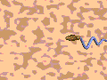 |
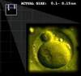 |
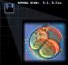 |
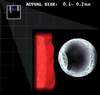 |
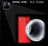 |
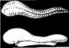 |
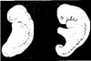 |
Druga faza razvoja opisuje embrio koji se razvija u “mudga”, što oznacava nešto
nalik na sažvakanu stvar (posebno lici na meso). Embrio u “mudga” fazi dobija
izgled sažvakane materije jer on na sebi ima linije, koje nalikuju na otiske
zuba pri žvakanju.
Ovaj naizgled grub opis je u stvari posve tacan: nakon što se oplodeno jajašce
ugnijezdi u matericu, ono pocinje da prima prve hranjive tvari i energiju od
svoje majke. U skladu s tim ono brzo pocinje da raste, nakon sedmice ili dvije
ono izgleda kao naborani komad mesa. Ovaj efekt dobiva se zbog razvoja malih
pupoljaka, ili izbocina, koje ce kasnije izrasti u kompletene organe i udove.
Slijedece dvije faze opisane u ajetu (23:14) govore o kostima nastalim od
“mudga”, nakon cega slijedi obavijanje kostiju mesom i mišicima. Ako slijedimo
napredak embrija vlastitim okom, uocit cemo da poslije prosjecno cetiri sedmice
pocinje proces tzv. diferencijacije, gdje se grupe celija u embriju
transformišu, da bi formirale vece organe. Jedna od struktura, koja se najprije
razvija u ovoj fazi, jeste hrskavicasta osnova ljudskog kostura.
Potom slijedi pojava drugih organa ukljucujuci uši, oci, bubrege, srce, itd.
Pri tome se održava redoslijed opisan u Kur’anu.
Ajet 23:14 završava se rastom organizma u utrobi, nakon cega slijedi rodenje.
Ajet 22:5 dodaje još jedan detalj o embriju. U ovom ajetu “mudga” se
kvalificira frazom “djelimicno formiran i djelomicno neformiran.”
Kao što se vidi iz gornjih naznaka naša moderna posmatranja embrionalnog
razvoja, otkrila su kako se razlicite strukture i organi razvijaju jedan za
drugim kroz diferencijaciju.
(23:112,113) RELATIVNOST U KUR’ANU
Zakljucci, kojima nas vode otkrica savremene nauke, pokazuju da vrijeme nije
jedna apsolutna cinjenica, kao što pretpostavljaju materijalisti, vec samo
relativna percepcija. Ono što je još interesantnije je da je ova cinjenica u
Kur’anu saopštena ljudima prije 14 stoljeca. U Kur’anu, dakle, imamo razlicite
reference za relativnost vremena. U nekim ajetima ima indikacija da ljudi
vrijeme opažaju razlicito i da oni ponekad vrlo kratak vremenski period vide
kao dugacak.
Slijedeci razgovor ljudi za vrijeme Sudnjeg dana je dobar primjer za ovo:
112. (Allah) ce reci: “Koliko ste ostali na Zemlji,
racunajuci godine?”
113. Reci ce: “Ostali smo dan ili dio dana. Ta pitaj one koji su brojali!”
114. (Allah) ce reci: “Ostali ste samo malo, kad biste znali!”
(Kur’an, 23:112-114)
U nekim drugim ajetima navedeno je da vrijeme može teci razlicitim brzinama u
razlicitim okolnostima.
“I požuruju te s kaznom. A nece Allah prekršiti obecanje
Svoje. I uistinu, dan je kod Gospodara tvog kao hiljadu godina od onog što
racunate.”
(Kur’an, 22:47)
“Penju se meleci i Duh Njemu, u danu cija je mjera pedeset
hiljada godina.”
(Kur’an, 70:4)
Ovi ajeti su cista manifestacija relativnosti vremena. Cinjenica da je ovo
rezultat dostignuca nauke 20-og vijeka, a u Kur’anu objavljen prije 1400 godina
je indikacija da je Kur’an Objava od Allaha, koji obuhvata i svo vrijeme i sav
prostor.
(24:35) NUKLEARNE REAKCIJE U ZVIJEZDAMA
Masivne novoformirane zvijezde se grce pod vlastitim gravitacionim pritiskom.
Kao rezultat toga njihove centralne zone postaju gušce i zbog toga vruce. Kada
se materijal u centru zvijezde dovoljno zagrije, da budemo precizni, najmanje 7
miliona stepeni Kelvina, pocinju nuklearne reakcije.
Te reakcije, koje su slicne onima u hidrogenskoj bombi, nastavljaju se sve dok
živi zvijezda. One se jasno razlikuju od obicnog sagorijevanja (npr. gorenja
drveta). Ono što se stvarno dogada unutar zvijezde jeste pretvaranje vodika u
helijum, sa oslobadanjem ogromne energije. To je upravo ono što Kur’an opisuje
rijecima:
“Allah je Svjetlost nebesa i Zemlje! Primjer svjetla
Njegovog je kao udubina, u njoj svjetiljka, svjetiljka u staklu, staklo - kao
da je ono zvijezda blistava; pali se od drveta blagoslovljenog, masline, ne
istocne, niti zapadne. Gotovo da ulje njegovo zasija, a da ga vatra ne dotakne.
Svjetlost nad svjetlošcu! Allah vodi svjetlu svom koga hoce i Allah navodi
primjere ljudima; a Allah je o svakoj stvari Znalac.”
(Kur’an, 24:35)
Ovaj ajet spominje zvijezdu, njeno gorivo i reakciju, koja nije sagorijevanje
(vatra). Ukratko receno, ono o cemu govori ajet je tacan opis nuklearne
reakcije, koja se dogada u zvijezdi.
Ove nuklearne reakcije prouzrokuju da zvijezda u prostor odašilje sve vrste
radijacije, pocevši od X-zraka, gama zraka u podrucju kratkih talasa, i radio
talasa. Vidljivi dio ovih talasa, koji se nalaze izmedu ultravioletnih i
infracrvenih mi nazivamo Suncevom svjetlošcu.
Prva generacija zvijezda sastojala se od vodonika i nešto malo helijuma (2%
njihove mase), koje su bile stvorene “Big-bangom.”
Druga generacija zvijezda i planeta nasljeduju otpadne proizvode davno umrlih
zvijezda (helijum, ugljik, azot, kisik itd.) i uvrštavaju ih u svoje strukture.
Treca generacija zvijezda je ista, samo što one više sadrže otpadnog
galaktickog materijala.
Obzirom da je ugljik prisutan u skoro svim zvijezdama (crveni patuljci su
diskutabilni pošto to mogu biti zvijezde prve generacije, koje su preživjele do
današnjeg dana), on može biti iskorišten u fuzijskim reakcijama pri razlicitim
temperaturama.
Postoji lanac od šest reakcija, koje se dogadaju pri temperaturi 10 miliona
kelvina u svakoj zvijezdi glavnog niza druge generacije.
(24:40) DUBINSKE MORSKE STRUJE
U Kur’anu casnom citamo:
“Ili kao tmine u moru dubokom, prekriva ga talas, iznad njega
talas, iznad njega oblaci. Tmine, jedna iznad druge. Kad bi izvadio ruku svoju,
jedva bi je vidio! A onaj kome Allah ne nacini svjetlo, tad nema za njega
svjetla nikakva.”
(Kur’an, 24:40)
U 17-om vijeku ljudi su poceli da se bave gradnjom jedne vrste podmornica.
Prvo jedno takvo sredstvo, koje se našlo pod vodom, sagradio je Kornelis
Drebbel, dvorski inženjer iz Engleske, a to je demonstrirano na rijeci Temzi
1620. godine. Od tada pa nadalje razvoj podmornica se nastavio do 20-og vijeka.
1954. godine prva nuklearna podmornica postala je realnost.
Proucavanjem mora došlo se do zakljucaka da vode koje leže ispod površinskih
talasa nisu u stalnom miru i nepokretnosti, kao što se zamišljalo.
Nasuprot tome postoje podvodne struje nazvane dubinske morske struje, koje
nekada mogu biti tako jake, da preslažu sedimente na okeanskom dnu.
Kako je Muhammed a.s. znao o ovim podvodnim strujama stoljecima prije nego što
su ljudi izmislili potrebne alate za podmorska istraživanja?
’Reci: “Objavio ga je Onaj koji zna tajnu na nebesima i
Zemlji. Uistinu, On je Oprosnik, Milosrdni.”
(Kur’an, 25:6)
(24:40) TAMA DUBOKOG MORA
“Ili kao tmine u moru dubokom, prekriva ga talas, iznad njega
talas, iznad njega oblaci. Tmine, jedna iznad druge. Kad bi izvadio ruku svoju,
jedva bi je vidio! A onaj kome Allah ne nacini svjetlo, tad nema za njega
svjetla nikakva.”
(Kur’an, 24:40)
U vezi sa gornjim ajetom treba napomenuti da su naucnici pod pojmom “tmina iznad
tmine” smatrali postepenu separaciju svjetlosnog spektra u okeanu do postizanja
konacnog mraka.
Drugim rijecima, u jednoj dubini podrucje žutog potiskivano je žutom tamom. Na
drugoj dubini crveno podrucje potiskivano je crvenim mrakom, itd. Tama dubokog
mora i okeana nalazi se na oko 200 m dubine i naniže. Na ovoj dubini skora da i
nema svjetlosti. Na dubini ispod 1000 m uopce više nema svjetla.
(24:43) KUR’AN O OBLACIMA
Naucnici su proucavali razne vrste oblaka te su zakljucili da se kišni oblaci
oblikuju i formiraju prema konacnim sistemima i odredenim koracima, koji su
vezani za tip vjetra i same oblake.
Jedna vrste kišnih oblaka su kumulonimbusi, koje obicno prati grmljavina.
Meteorolozi su proucavali kako se formiraju kumulonimbusi i kako proizvode
kišu, grad i munju. Utvrdili su da kumulonimbusi prolaze kroz slujedece faze do
kiše:
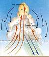
1. Oblake goni vjetar: kumuloninbus se pocinje formirati kad vjetar
potjera male dijelove oblaka (kumulusa) u zonu gdje se ti oblaci pretvaraju.
2. Spajanje: zatim se mali oblaci spajaju, tvoreci veci oblak.
3. Gomilanje: kada se spoje mali oblaci, povecava se uzgon u vecem
oblaku. Uzgon blizu centra oblaka je jaci od onog na krajevima. Taj uzgon
prouzrokuje da tijelo oblaka raste u visinu, te se on nagomilava. Ovaj
vertikalni rast prouzrokuje da se tijelo oblaka proteže u hladnije zone
atmosfere, gdje se formiraju kišne kapljice i grad, i rastu sve više i više.
Kada te kapljice vode postanu preteške za uzlaznu struju, one pocinju da padaju
iz oblaka kao: kiša, grad, itd.
Allah dž.š. u Kur’anu kaže (primijetite važan detalj):
“Zar ne vidiš da Allah goni oblake, zatim ih spaja, potom ih
cini gomilom, pa vidiš kišu izlazi iz sred njih. I spušta iz neba, s brda
(oblaka) u njemu nešto grada, pa pogada njime koga hoce, a otklanja od koga
hoce. Skoro da bljesak munje Njegove oduzme vidove.”
(Kur’an, 24:43)
Meteorolozi nisu tako davno došli do saznanja o detaljima formiranja oblaka,
njihovoj strukturi i funkcionisanju. Sada se u te svrhe koristi savremena
oprema, kao avioni, sareliti, kompjuteri, baloni i druga porema za proucavanje
vjetrova i njihovih smjerova, za mjerenje vlažnosti i njene promjene, za
odredivanje nivoa i promjena atmosferskih pritisaka.
Nakon osvrta na oblake i kišu ajet 24:43 govori o gromu i gradu:
“I spušta iz neba, s brda (oblaka) u njemu nešto grada, pa
pogada njime koga hoce, a otklanja od koga hoce. Skoro da bljesak munje Njegove
oduzme vidove.”
(Kur’an, 24:43)
Meteorolozi su utvrdili da se kumulonimbusi, koji proizvode grad, protežu u
visinu od 7,5 do 9,0 kilometara kao planine, kao što Kur’an kaže: “I spušta
grad sa planina…”
Ovaj ajet namece jedno pitanje. Zašto ajet povezuje “munju Njegov” za grad? Da
li to znacI da je grad jedan od glavnih faktora u nastanku munje? Pogledajmo
šta knjiga pod naslovom “Meteorologoja danas” o ovome kaže:
“Oblaci dobijaju naelektrisanje kad grad pada kroz njegovo podrucje super
ohladenih kapljica i ledenih kristala. Kako se tecne kapljice sudaraju sa
gradom, one se pri kontaktu smrzavaju i otpuštaju latentnu toplotu. Ovo održava
površinu grada toplijom od okolnih ledenih kristala.
Kad grad dode u kontakt sa ledenim kristalom, dogada se važan fenomen.
Elektroni poteku sa hladnijeg predmeta na topliji. Otuda grad postaje negativno
naelektrisan. Isti efekat se dogada, kad super ohladene kapljice dodu u kontakt
sa djelovima grada.
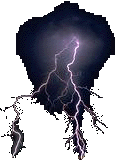 |
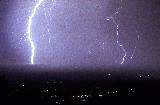 |
Te lakše pozitivno naelektrisane cestice uzgonska struja diže u gornji dio
oblaka. Grad ostavljen sa negativnim naelektrisanjem pada na dno oblaka, tako
da donji dio oblaka postane negativno naelekrisan.
To negativno naelektrisanje se prazni u vidu munje u Zemlju."
Iz ovoga zakljucujemo da grad ima jednu od glavnih uloga u nastanku munje.
Cinjenice o munji nisu davno otkrivene.
(25:25) MELECI NA NEBESKIM KAPIJAMA
“Na Dan kad se rascijepi nebo oblacima, i meleci spuste
(velikim) spuštanjem.”
(Kur’an, 25:25)
“A na Dan kad pokrenemo brda i vidiš Zemlju istaknutu, i njih
saberemo, tad necemo ostaviti nijednog od njih.”
(Kur’an, 18:47)
Kolapsirajuci univerzum ce možda biti uništen u vatrenoj kugli, sažimajuci se u
hropcu kojeg fizicari nazivaju “Veliki grc.”
Pri tome ce biti potrebno ukloniti ljude iz tog procesa. Svako ko bi ostao,
povratio bi se u ništavilo, jer ce vrijeme teci unazad. Sakupljanje ljudi i
njihovo uklanjanje vjerovatno ce uciniti meleci u “Velikom silasku.”
Naše konacno putovanje kroz nebeske kapije desit ce se kroz mnoge ravni i
dimenzije. Rijec “terkebunne” (jahati, letjeti, ploviti), koja je u Kur’anu
upotrijebljena za ovo putovanje, znaci da cemo se kretati leteci s necim, ili
na necemu, ploviti.
Allah najbolje zna!
“Sigurno cete prelaziti iz sfere u sferu.”
(Kur’an, 84:19)
“Zar nisu vidjeli da ono što je Allah stvorio od stvari baca
sjene svoje desno i lijevo, pokorno Allahu, i oni su ponizni?”
(Kur’an, 16:48)
“Zar ne vidiš - Gospodar tvoj, kako izdužuje sjenu? A da
hoce, sigurno bi je ucinio nepomicnom; potom cinimo nad njom Sunce pokazivacem;
Zatim je privlacimo Sebi privlacenjem lagahnim.”
(Kur’an, 25:45,46)
Možda zvuci cudno, ali sjena zaista može govoriti. Naravno ne doslovno, ali
promatramo li sjenu, njenu dužinu i razlike dužine tokom dana, ona ce nam
otkriti mnogo toga. Na primjer, nademo li se na ekvatoru u podne kada je Sunce
u zenitu, iznad naše glave, uzalud cemo oko sebe tražiti sjenu. Ni mi, ni
okolni predmeti nece za sobom “vuci” svoju sjenu. Na srednjim geografskim
širinama to se nikad nece dogoditi. Sjena ce u podne biti duža ili kraca, ali
ce uvijek biti prisutna.
Odgovor na pitanje, zašto, leži u cinjenici da u našim geografskim širinama
Sunce nikada ne dostiže zenit. Najvecu visinu dostigne na prvi dan ljeta
odnosno na dan solsticija kada je u zenitu na tzv. Rakovoj obratnici, tj. na
23,5 stepeni sjeverne širine. Jednako tako kada je u našim širinama prvi dan
zime Sunce doseže zenit u podne na svim mjestima koja se nalaze na Jarcevoj
obratnici tj. na 23,5 stepena južne geografskim širine. Jedino izmedu obratnica
u granicama tzv. “žarkog pojasa” moguce je u podne izgubiti svoju sjenu.
Na polu ce naravno, sjena dostici svoju maksimalnu duljinu, jer se Sunce
maksimalno na obzor podigne 23,5 stepeni. Najmanja dužina sjene na polu iznosi
više od dvostruke visine predmeta, jer se Sunce cijeloga dana krece gotovo
paralelno s horizontom, sjena ce citavog dana biti jednake dužine. Tu cemo
ovoga puta stati, mada je govor sjene daleko bogatiji. Sjetimo se samo one
zagonetke kako izmjeriti visinu piramide uz pomoc štapa.
(25:53) BARIJERA MEÐU VODAMA
Kur’an spominje da postoje barijere medu morima koja se susrecu.
“Pustio je mora dva - susrecu se, Izmedu njih je berzeh, ne
prelaze (ga).”
(Kur’an, 55:19-20)
Ali, kada Kur’an govori o vododjelnici izmedu slatke i slane vode, on spominje
postojanje “zabranjene brane”. Bog kaže u Kur’anu:
“I On je Taj koji je pustio dva mora: ovo pitko, slatko, a
ovo slano, gorko; i nacinio je izmedu njih dvoje berzeh i prepreku
nesavladivu.”
(Kur’an, 25:53)
Covjek se može upitati zašto Kur’an spominje podjelu kad govori o prepreci
izmedu slatke i slane vode, a ne spominje je kada govori prepreci izmedu dva
mora?
Tradicionalno za ove ajete postoje dva tumacenja. Kur’an navodi da postoji
barijera izmedu mora, znaceci da ce ta barijera sprijeciti mora da predu jedno
u drugo, ili da preplave jedno drugo. Zastupnici drugog mišljenja se pitaju
kako može postojati barijera izmedu mora, a da jedno ne prelazi u drugo, jer
ajet pokazuje da se mora susrecu? Oni su zakljucili da se mora ne susrecu i
potražili su drugo znacenje izraza “meredže.”
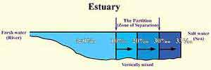 |
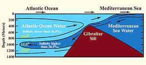 |
Medutim, moderna nauka nam sada pruža dovoljno informacija o ovom pitanju.
Savremena nauka je otkrila da u zonama, gdje se susrecu dva razlicita mora, da
izmedu njih postoji barijera. Ta barijera dijeli dva mora tako da svako od njih
ima razlicitu temperaturu, slanost i gustocu. Npr. voda Mediterana je topla,
slana i manje gusta u odnosu na vodu Atlanskog okeana. Kada mediteranska voda
ude u Atlanski okean preko Gibraltarske mede, ona se krece nekoliko stotina
kilometara u Atlantik na dubini oko 1000 m noseci svoje karakteristike. Na ovoj
dubini voda Mediterana se stabilizira. Mada postoje veliki talasi, jake struje
i plime u tim morima, vode se ne miješaju, niti prelaze ovu barijeru.
Moderna nauka je otkrila da je na ušcima, gdje se susrecu slatka i slana voda,
situacija nešto drugacija od one kada se susrecu dva mora. Otkriveno je da ono
što razlikuje slatku vodu od slane u ušcima jeste “pycnocline zona sa
naznacenim diskontinuitetom gustoce razdvajanja dvaju slojeva”. Ova podjela
(zona separacije) ima drugaciji salinitet i od slatke i od slane vode.
Ovi podaci su ne tako davno utvrdeni korištenjem napredne opreme za mjerenje
temperature, saliniteta, gustoce, itd. Ljudsko oko ne može vidjeti razliku
izmedu dva mora koja se dodiruju, naprotiv, nama se oba mora cine kao jedno
homogeno more. Isto tako ljudsko oko ne može vidjeti podjelu voda na ušcima na
tri vrste: svježu vodu, slanu vodu i zonu separacije.
(27:88) KRETANJE ZEMLJE U PROSTORU
Zemlja rotira oko ose koja se pruža od južnog do sjevernog pola. Glavna sila
koja djeluje na Zemlju, je gravitaciona sila Sunca. Pošto ova sila djeluje na
centar mase Zemlje, ona ne proizvodi nikakvo uvijanje u odnosu na osu rotacije,
pa se tako ugaoni moment ne može promijeniti.
Osa rotacije Zemlje nageta je u odnosu na ravan koju formira orbita Zemlje oko
Sunca (ekliptika), što je dalo mogucnost da se na planeti razvije život. Taj
nagib Zemljine ose prouzrokuje promjenu godišnjih doba. Rezultat je razlicitost
klime u ljetnom i zimskom periodu na istoj geografskoj lokaciji. To je zbog
toga, što je ugaoni moment vezan za Zemljinu skoro kružnu trajektoriju oko
Sunca sacuvan pa je potrebno tacno pola godine svake godine da Zemlja preda sa
jedne strane Sunca na drugu.
Zemlja rotira oko Sunca, pri cemu joj je za pun krug potrebno 365,25 dana. Da
planeta nije nagnuta svojom osom, polovi bi bili uronjeni u stalni hladni mrak,
što bi sprecavalo sezonsko topljenje polarnog leda.
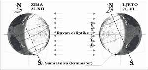
Rotacija Zemlje oko Sunca nije bila poznata u VII-om stoljecu. U to vrijeme se
još uvijek mislilo da je Zemlja nepokretni planet u centru univerzuma. Pošto je
bilo ocigledno da se nebom krecu: Sunce, Mjesec, zvijezde, smatralo se da se
svi oni krecu oko Zemlje.
Kretanje Zemlje u prostoru potvrdeno je slijedecim ajetom:
“I vidiš planine, misliš nepokretne su, a one se krecu
kretanjem oblaka. Djelovanje je Allaha Koji je usavršio svaku stvar. Uistinu!
On je o onom šta cinite Obaviješteni.”
(Kur’an, 27:88)
Obzirom da se Zemlja krece u prostoru, tako se sve zajedno s njom krece,
ukljucujuci i planine.
Pauk po nazivu dinopis ima razvijenu vještinu lova. Umjesto da plete nepokretnu
mrežu i da ceka na žrtvu, on isplete malu neuobicajenu mrežu, koju on baci na
žrtvu. Nakon toga on cvrsto uplete žrtvu u tu mrežu. Zarobljeni insekt ne može
uciniti ništa da se izvuce. Mreža je tako savršeno konstruisana, da se insekt
sve više zapetljava, što se više pokušava izvaditi. Da bi uskladištio hranu,
pauk obavija žrtvu sa dodatnim nitima kao da je pakuje.
Kako ovaj pauk nacini tako izuzetnu mrežu po njenom dizajnu i hemijskoj
strukturi? Nemoguce je za pauka da je on takvu vještinu stekao koincidencijom,
kao što tvrde evolucionisti. Pauk je lišen sposobnosti ucenja i pamcenja i cak
nema mozga da bi izveo te stvari. Jasno, takvu sposobnost je pauku dao njegov
Stvoritelj Allah dž.š, Svemocni.
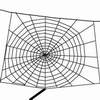
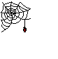
U nitima pauka sadržana su prava cuda. Paukova nit sa precnikom manjim od
hiljaditog dijela milimetra pet puta je jaca od celicne žice iste debljine. Još
jedna znacajna karakteristika ove niti je što je izuzetno lahka. Težina te
niti, dovoljno duge da opaše svijet je svega 320 grama. Celik, koji se
specijalno proizvodi u industriji je jedan od najjacih materijala. Ipak, pauk u
svom tijelu može proizvesti daleko jacu nit od celicne. Dok covjek proizvodi
celik, on koristi višestoljetno znanje i tehnologiju. A koje znanje i
tehnologiju koristi pauk dok pravi svoju nit?
Kao što vidimo, sva tehnicko-tehnološka sredstva, koja su na raspolaganju
covjeku, zaostaju iza pauka.
Pa ipak, i nakon svega, iz perspektive covjeka paukova kuca je najslabija kuca.
“Primjer onih koji uzimaju mimo Allaha zaštitnike, je kao
primjer pauka koji isplete kucu. A uistinu - od najslabijih kuca je kuca
paukova - kad bi znali!”
(Kur’an, 29:41)
(30:2,3) NAJNIŽA TACKA NA ZEMLJI
Jedna interesantna cinjenica, vezana za najvecu depresiju na Zemlji, spomenuta
je u slijedecem kur’anskom ajetu:
“Poraženi su Bizantinci,
U zemlji najnižoj, a oni ce poslije poraza svog, pobijediti,
Za nekoliko godina - Allahova je naredba prije i poslije - a tog dana radovat
ce se vjernici.”
(Kur’an, 30:2,3)
Sada je poznato da je ta zona blizu Mrtvoga mora - koja je bila scena tih
bitaka, najniže mjesto na Zemlji ispod morskog nivoa.
Kur’an se osvrce na Mrtvo more u razlicitom kontekstu, vezanom za kazivanje o
Lutu a.s. Lut, koji je bio amidžic Ibrahima a.s. bio je vjernik i Ibrahimov
sljedbenik. Kada je Ibrahim napustio svoj dom u Kaldeji i otišao u Siriju i
Palestinu, Lut je sa njim krenuo u dobrovoljno izgnanstvo. Narod Lutov, koji je
bio ogrezao u nemoralu, njemu se smijao govoreci:
“Zar vi uistinu pristupate ljudima i presjecate put, i cinite
u sastajalištu svom ružno? Tad je bio odgovor naroda njegovog samo što su
rekli: “Daj nam kaznu Allahovu, ako si od istinitih!”
(Kur’an, 29:29)
Kur’an iznosi pricu kako je Bog uništio stanovnike tih gradova, izuzev Luta i
vjernika koji su ga slijedili:
“Uistinu, Mi smo ti koji ce spustiti na stanovnike ovog grada
kaznu s neba, zbog toga što su griješili.”
I doista smo od njega ostavili znak jasan za ljude koji razmišljaju.”
(Kur’an, 29:34,35)
Kazna je bila sumporna kiša, koja je u potpunosti prekrila gradove, s mogucim
zemljotresom ili vulkanskom erupcijom.
Danas je citav trakt istocne strane Mrtvog mora, gdje su se nalazili gradovi
Sodoma i Gomora, pokriven sumpornim solima, gdje ne mogu opstati ni životinje
niti biljke. Mrtvo more se na arapskom zove “Bahr Lut” , što znaci Lutovo more.
To je scena krajnje pustoši, koja stoji kao trajan sibmol uništenja.
Izraz “edna” u ajetu znaci istovremeno najbliži i najniži. Komentatori Kur’ana,
neka je Allah zadovoljan njima, su bili mišljenja da se izraz “ednal-erd”
odnosi na najbližu zemlju Arabijskom poluostrvu.
Pa ipak ne možemo izbjeci i drugo znacenje ove rijeci. Na ovaj nacin Kur’an
jednoj rijeci daje više znacenja. Najniža tacka na Zemlji je upravo ovo mjesto,
koje je svjedok bitke u kojoj su poraženi Rimljani, a koje je 408,13 metara
ispod morskog nivoa.
(30:22) RAZLICITOST LJUDI
“I od znakova Njegovih je stvaranje nebesa i Zemlje, i
razlicitost jezika vaših i boja vaših. Uistinu, u tome su znaci za ucene!”
(Kur’an, 30:22)
“O ljudi! Uistinu, Mi smo vas stvorili od muška i ženska, i
ucinili vas narodima i plemenima, da biste se upoznavali. Uistinu!
Najplemenitiji od vas kod Allaha, je najbogobojazniji izmedu vas. Uistinu,
Allah je Znalac, Obaviješteni.”
(Kur’an, 49:13)
Rasne i jezicke razlike medu ljudima nisu razlozi za diskriminaciju. Allah
jednostavno opisuje ove razlike kao dio Njegove stvaralacke moci i On ne istice
ni jednu rasu kao superiorniju u odnosu na druge rase.
Naglasak ajeta 49:13 jeste, ustvari, da naucimo komunicirati jedni sa drugima.